Museu de jocs programats
🏷️ Projectes interactius i robòtica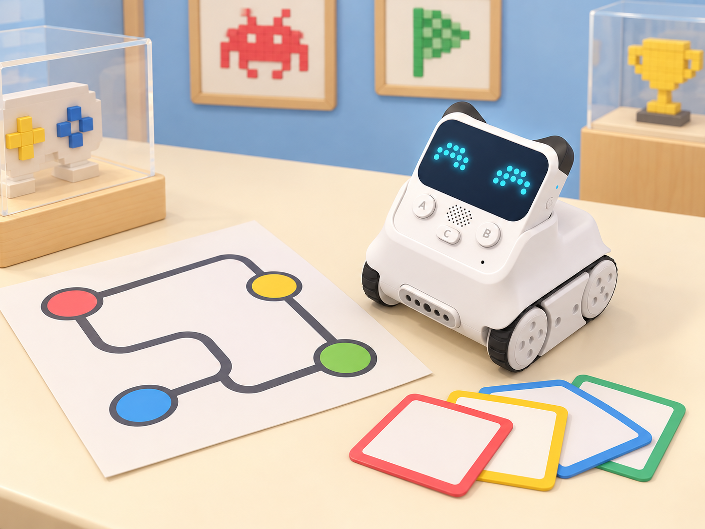
🌱 Situació, repte i intenció
Per a les lliçons 1–16, els objectius públics del curs diferent Codey Rocky & Neuron Discovery permeten una comprovació addicional, però no substitueixen les fitxes CSTA. La resta de sessions s’identifica com a adaptació pròpia del títol i l’objectiu públic. No incorpora Neuron ni cap accessori extern com a requisit.
Quan un repte oficial es basa en una història o joc concret, ací es transforma en un context de barri o centre. Cap activitat utilitza dades personals, velocitat corporal o sons enregistrats. Les proves de moviment es fan en una zona buida i amb una persona observadora.
🎯 Aprenentatges i vocabulari
- Reconéixer els components de Codey Rocky que es proven i relacionar botons, sensors i pantalla amb les respostes programades.
- Construir programes amb seqüències, repeticions, condicions, variables i funcions segons el repte de cada lliçó.
- Crear animacions i mecàniques de joc, i provar-les amb casos previstos i casos que poden fer fallar el programa.
- Depurar una instrucció concreta i explicar els límits de cada joc o moviment abans de compartir-lo amb una altra persona.
🧰 Materials i preparació
Codey Rocky, ordinador amb versió compatible de mBlock, cable USB o connexió provada i materials plans de cartó. Useu exclusivament mòduls integrats comprovats en la unitat: botons, pantalla, indicador RGB, altaveu, sensor de so/llum, potenciòmetre, giroscopi, emissor/receptor IR i sensor de color/distància del xassís, segons el model i firmware. Les activitats L21–L24 necessiten el Rocky i el seu sensor corresponent; si no està disponible, feu el mateix algorisme en simulació. Neuron queda fora d’aquesta adaptació.
📅 Seqüència didàctica
El secret de Codey Rocky · del problema al primer programa (40 min)
Fase 1 · Activem i prediem
Mostreu Codey Rocky apagat i un conjunt de targetes amb robots de contextos diferents. En parelles, relacioneu cada robot amb una tasca possible i expliqueu quina observació us ha fet triar-la. Diferencieu una funció comprovada d’una suposició: aquesta activitat no demana activar reconeixement facial ni cap servei d’intel·ligència artificial.
Fase 2 · Explorem i construïm
Observeu les dues parts del robot de la dotació. Codey conté el controlador, pantalla LED, botons, llums, altaveu i sensors integrats; Rocky n’és la base mòbil, amb motors i sensor frontal inferior. Feu un inventari dibuixat de les peces que realment veieu i assenyaleu una capacitat que vulgueu comprovar. No afegiu accessoris externs al mapa del kit.
Fase 3 · Expliquem i registrem
Construïu un esquema propi idea → programa → càrrega → acció. Expliqueu que un programa és una seqüència d’instruccions que es tradueix a blocs; el robot només executa allò que s’ha programat i carregat. En mBlock 5, localitzeu escenari, categories de blocs i àrea de codi. Feu una predicció abans de connectar cap dispositiu.
Fase 4 · Apliquem i millorem
Connecteu Codey amb el cable USB, enceneu-lo i seleccioneu el port sèrie correcte en mBlock 5. Creeu una acció mínima amb l’esdeveniment de prémer A i una icona de pantalla; carregueu el programa, desconnecteu el cable de dades i poseu el robot sobre una superfície estable abans de provar-lo. Si no respon, reviseu alimentació, port, mode de càrrega i esdeveniment, d’un en un.
Fase 5 · Comprovem i reflexionem
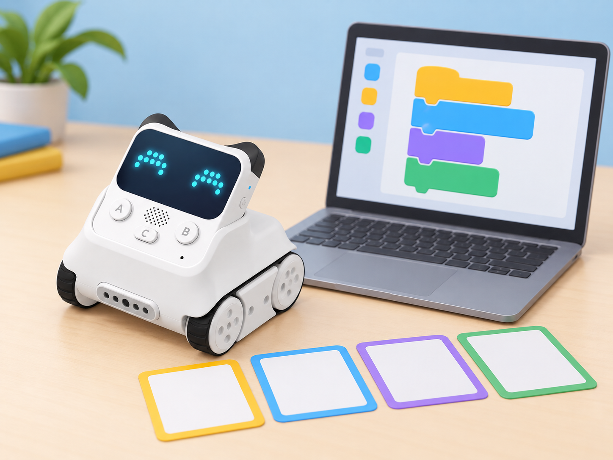
Botons i expressions programades (40 min)
Fase 1 · Activem i prediem
Recordeu una entrada i una eixida de la lliçó anterior. Presenteu una situació neutral: “quan entrem en una aula fosca, premem l’interruptor i s’encén el llum”. Identifiqueu l’acció que inicia la resposta i predigueu què passaria si no es produïra. En aquesta SDA, les icones de pantalla són símbols triats per l’equip: no mesuren ni representen l’estat emocional de cap persona.
Fase 2 · Explorem i construïm
Feu una versió pròpia del joc desconnectat «Segueix les instruccions»: assigneu tres o quatre senyals geomètrics a accions simples de paper, com alçar una targeta, dibuixar una forma o girar una fitxa. Una persona mostra el senyal i el grup executa l’acció acordada; proveu una ronda lenta i una amb els senyals en un altre ordre. Qui preferisca no fer moviments pot ser qui mostra les targetes, marca la seqüència o comprova si la resposta correspon al senyal.
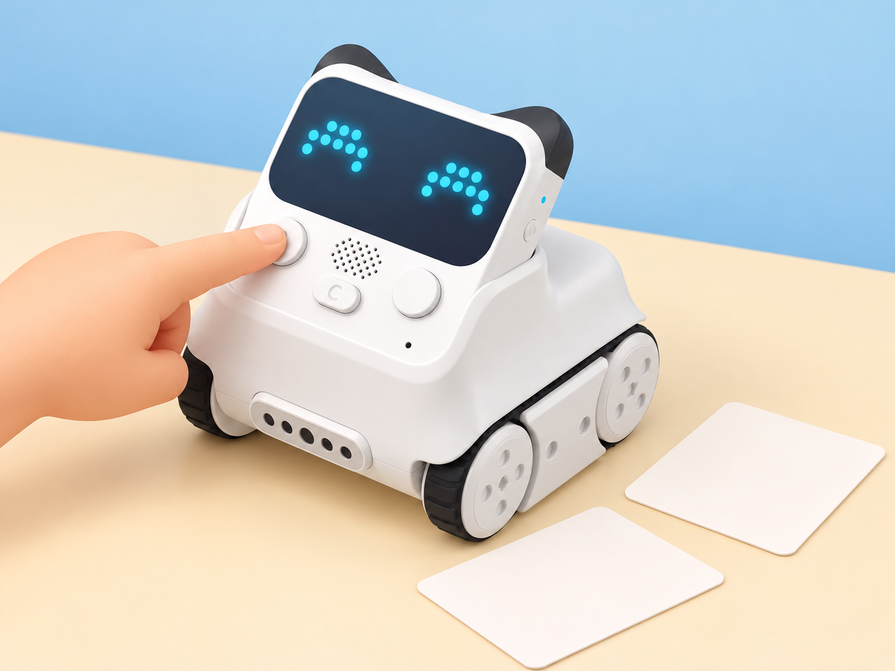
Fase 3 · Expliquem i registrem
En mBlock, localitzeu un esdeveniment d’inici i els blocs «quan es prem A», «B» i «C». Seguiu amb el dit el programa model i expliqueu la relació entrada–resposta. Distingiu l’esdeveniment (inici o botó premut) de l’acció programada (mostrar una icona, reproduir un so o combinar les dues). Abans de carregar res, dibuixeu una taula amb les tres entrades, la resposta esperada i una comprovació;
si la versió de l’app o el dispositiu no mostra algun bloc, anoteu la diferència i continueu amb les entrades disponibles.
Fase 4 · Apliquem i millorem
En parelles, programeu una resposta diferent per a cada botó amb símbols i sons propis o d’ús lliure. Feu una primera prova guiada i després canvieu els rols: una persona programa i l’altra comprova, sense tocar el projecte. Proveu cada entrada almenys dues vegades i una vegada l’inici; registreu si la resposta coincideix amb la taula. Ajusteu un bloc cada vegada.
El so és opcional: oferiu sempre una versió silenciosa i no useu etiquetes com “content”, “trist” o “enfadat” per inferir com se sent qui participa.
Fase 5 · Comprovem i reflexionem
Cada parella presenta una resposta del seu programa i explica quin esdeveniment la desencadena. Una altra parella tria una entrada i comprova si el resultat coincideix amb la predicció; si no, l’equip assenyala el primer bloc que cal revisar i proposa una prova nova.
Dissenyem una animació amb seqüències (40 min)
Fase 1 · Activem i prediem
Presenteu una escena de biblioteca: una persona arriba, deixa un llibre i tanca el prestatge. Ordeneu tres vinyetes i compareu què deixa de tindre sentit si se n’intercanvien dues. Anomeneu seqüència el conjunt d’accions ordenades que completa una tasca.
Fase 2 · Explorem i construïm
Una persona fa de robot i una altra li dona instruccions per a arribar a una marca i dibuixar una icona. La persona-robot executa literalment les ordres, sense completar passos que no s’han dit. Anoteu una ambigüitat i reescriviu-la abans de repetir.
Fase 3 · Expliquem i registrem
Obriu un programa amb l’esdeveniment «quan es prem A» i encadeneu quatre fotogrames propis de pantalla amb una duració curta per a cadascun: icona inicial, canvi, gest visual i icona final. Expliqueu com l’ordre dels blocs determina l’animació; no cal representar cares o emocions.
Fase 4 · Apliquem i millorem
Dibuixeu un fotograma en una graella LED de cinc per cinc. Dupliqueu-ne el bloc, canvieu uns pocs píxels i repetiu la seqüència fins que una altra parella puga reconéixer el moviment o missatge. Carregueu-la i ajusteu l’ordre o la duració a partir d’una observació concreta.
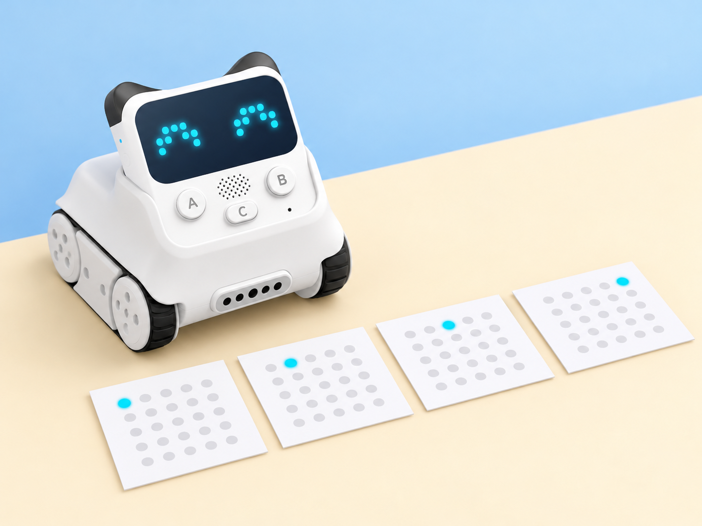
Fase 5 · Comprovem i reflexionem
Detectem i corregim un error (40 min)
Fase 1 · Activem i prediem
Recupereu què és una seqüència: una sèrie d’instruccions que s’executen en un ordre determinat. Expliqueu que un bug és un error del programa que impedeix obtindre el resultat previst; no és un insecte, una avaria del robot ni un sensor amb un límit propi. Anuncieu que revisareu tres programes d’una exposició escolar línia per línia, de dalt a baix, i que abans de tocar-los cal descriure què esperàveu que passara.
Fase 2 · Explorem i construïm
Prepareu tres programes de pantalla amb un error cadascun, inspirats en els exercicis oficials i recontextualitzats per a l’exposició del centre: (1) una seqüència d’icones d’un cotxe de servei que no arranca perquè li falta l’esdeveniment d’inici; (2) un compte arrere per obrir l’exposició amb els valors 5, 3, 4, 1, 2, 0, fora d’ordre; (3) una animació d’una eruga dibuixada que queda interrompuda per un fotograma alié a la història. El segon programa és només un comptatge de preparació.
Abans d’executar, cada parella anota el resultat esperat i marca en quin bloc sospita que es trenca la seqüència.
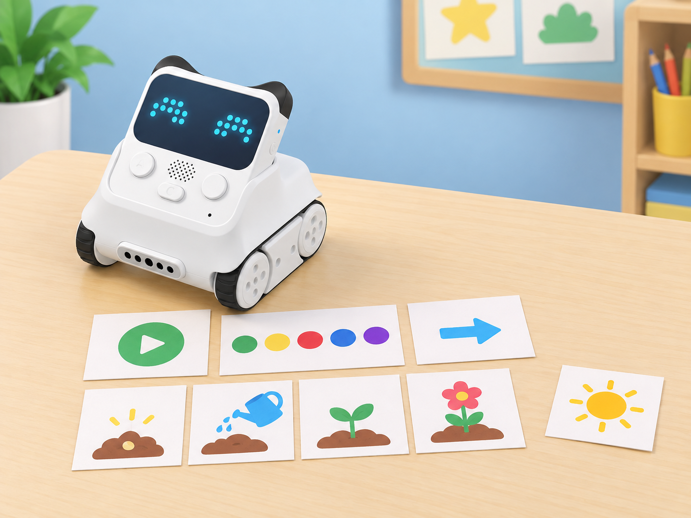
Fase 3 · Expliquem i registrem
Llegiu cada programa de dalt a baix i compareu el resultat amb la predicció. En el primer, localitzeu que falta un bloc d’esdeveniment; en el segon, compareu la posició dels nombres i reconstruïu 5–4–3–2–1–0; en el tercer, identifiqueu el fotograma que no pertany a l’animació. Distingiu aquests errors de programació d’una pantalla apagada o d’un problema de connexió. No canvieu diversos blocs alhora.
Fase 4 · Apliquem i millorem
Repareu cada programa amb el canvi mínim: afegiu un esdeveniment d’inici al primer; ordeneu els valors del compte arrere al segon; retireu el fotograma alié del tercer. Executeu de nou el mateix exemple després de cada reparació i registreu si ara coincideixen resultat i predicció. Una parella revisora rep el programa sense l’explicació de l’autoria, el prova i comprova si pot justificar el canvi.
Fase 5 · Comprovem i reflexionem
Bucle comptat (40 min)
Fase 1 · Activem i prediem
Recupereu la seqüència d’animació de L3. En una tira de quatre vinyetes, representeu una granota dibuixada que es prepara, salta, aterra i es prepara de nou mentre travessa quatre illots de la marjal. Marqueu quin fragment es repeteix quatre vegades i quines accions passen només abans o després del bucle. Feu explícita la correspondència amb l’exemple oficial: una ruta de 20 m amb quatre plantacions repeteix quatre vegades la mateixa seqüència d’accions.
Ací es manté el recompte i es transforma l’escena en un relat animat dels illots, sense calcular distàncies ni representar una ruta real. Aclarim que és una història mostrada a la matriu LED: Codey Rocky no es desplaça pels illots.
Fase 2 · Explorem i construïm
Ordeneu tres targetes de paper —preparar la granota, saltar i aterrar— i afegiu una pausa perquè es puga llegir cada fotograma. Feu que una altra parella execute el fragment quatre vegades. Després, compareu la tira de tres instruccions dins d’un únic bucle comptat amb la mateixa tira copiada quatre vegades; marqueu què queda dins de repeteix i què s’executa només una vegada abans o després.
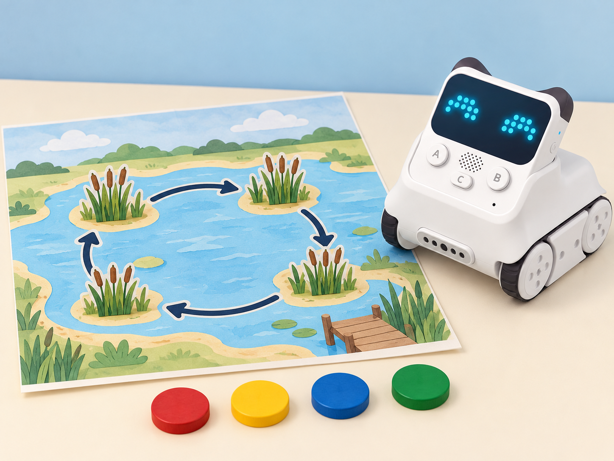
Fase 3 · Expliquem i registrem
En mBlock, programeu amb el botó A una animació original a la pantalla de Codey: mostreu dos dibuixos propis (granota preparada i salt), afegiu una pausa breu per a llegir-los i repetiu la seqüència amb repeteix (4). Després del bucle, mostreu una icona final diferent. Seguiu les quatre iteracions amb una taula de traça: número de volta i fotograma observat. Canvieu el recompte a 3, torneu a executar-lo i comproveu que la seqüència final es mostra només quan el bucle acaba.
Expliqueu quin esdeveniment inicia el programa i com el nombre de repeticions determina el final.
Fase 4 · Apliquem i millorem
En parelles, creeu una segona versió canviant només una decisió cada vegada: l’esdeveniment d’inici, el nombre de salts, els dibuixos o el so opcional. Afegiu una història de la marjal i intercanvieu els programes: l’equip visitant prediu quantes iteracions farà i identifica quan apareix el fotograma final. Si la versió no coincideix amb la predicció, localitzeu el bloc que determina el recompte abans de modificar-lo. El so es pot substituir per una pausa visual;
els dibuixos representen una història inventada, no una observació de fauna.
Fase 5 · Comprovem i reflexionem
Cada parella presenta l’animació i respon: què representa una iteració, quantes n’hi ha i com sap el programa que ha d’acabar? Autoavaluació: blau, identifique la seqüència repetida; groc, use el bucle per a fer quatre iteracions observables; violeta, canvie el recompte o l’esdeveniment i explique com afecta el resultat. Registreu un problema trobat i com l’heu resolt.
Bucle continu (40 min)
Fase 1 · Activem i prediem
Recupereu el programa de L5 i compareu repeteix (4) amb una seqüència que no té un nombre fix de voltes. Useu el cicle de llum i foscor com a exemple natural que es repeteix, i dibuixeu tres fotogrames per representar una alba i una posta de sol sobre la marjal. Predigueu quin programa acabarà després d’un nombre establit i quin continuarà fins que algú el detinga.
Fase 2 · Explorem i construïm
En mBlock, feu una animació finita amb un esdeveniment de botó i un repeteix; després, creeu-ne una segona amb un altre botó i poseu la seqüència dins de per sempre. Alterneu tres fotogrames propis amb pauses prou llargues perquè es puguen llegir. Abans de provar el bucle infinit, identifiqueu el control de parada de l’entorn.
Si la versió de mBlock ofereix un esdeveniment del botó C i un bloc per a aturar tots els scripts, assigneu-los aquesta funció i comproveu-la amb el robot quiet. Si no hi són, useu el control d’aturada de mBlock. En MicroPython, la documentació oficial mostra el botó C cridant codey.stop_all_scripts(); aquesta API no implica que el mateix bloc estiga disponible en mBlock.
Fase 3 · Expliquem i registrem
Compareu els programes bloc a bloc: quin té un nombre de voltes definit i quin no incorpora cap eixida natural? Executeu-los i registreu inici, dos cicles observats, ordre d’aturada i resposta final. Verifiqueu la via de parada que heu triat: el botó C només si heu pogut programar-lo en l’entorn disponible; si no, el control de mBlock. Anoteu quin mètode ha funcionat i expliqueu per què un bucle infinit necessita un control de parada accessible.
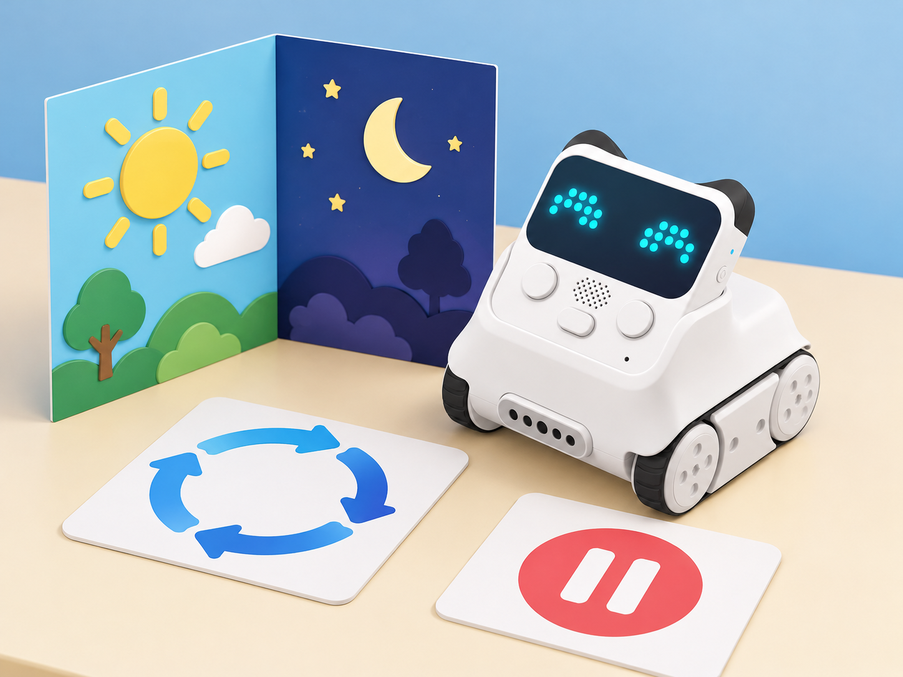
Fase 4 · Apliquem i millorem
En parelles, canvieu les imatges, l’ordre, una pausa, el so opcional o afegiu una llum RGB estable i suau; proveu si la història continua sent comprensible en tots dos programes. L’equip revisor comprova que la versió comptada acaba sola i que la versió contínua respon a l’aturada. No feu pampallugues ràpides ni sons sobtats; qui ho preferisca pot analitzar les targetes de fotogrames en paper, amb la mateixa predicció de bucle.
Fase 5 · Comprovem i reflexionem
Cada equip presenta les dues animacions i respon quina utilitza repeteix, quina per sempre i com n’ha comprovat la finalització. Completeu una autoavaluació: un bucle comptat de la vida quotidiana, un procés cíclic que no té un final fix i una precaució necessària quan un programa continua actiu.
Cursa I: colors i obstacles (40 min)
Fase 1 · Activem i prediem
Recupereu el treball anterior: recordeu què és un error de programa i distingiu repeteix de per sempre amb un exemple oral breu. Després, contrasteu-ho amb la condició: una decisió si comprova un valor i només aleshores executa una instrucció. Feu una «capsa de condicions» amb targetes de prova fàcils d’identificar i no personals (per exemple, «la fitxa és verda»): qui trau una targeta decideix si es compleix i segueix la instrucció associada.
En parelles, creeu una targeta pròpia de repte amb una resposta per al cas vertader i una altra per al fals. Predigueu com podria respondre Codey davant d’una bandera verda o d’un obstacle en una pista de maqueta. No és una cursa de velocitat.
Fase 2 · Explorem i construïm
Identifiqueu el mòdul IR de Rocky i comproveu el seu selector d’orientació: cap avall per llegir color/superfície, cap avant per detectar un obstacle. Són dues configuracions de prova, no dues lectures simultànies. Prepareu una porta amb targeta verda i una altra de color diferent; en una segona taula, poseu un obstacle tou i ample. Manteniu la base parada mentre canvieu l’orientació i comproveu al bloc de sensor què llig cada posició.
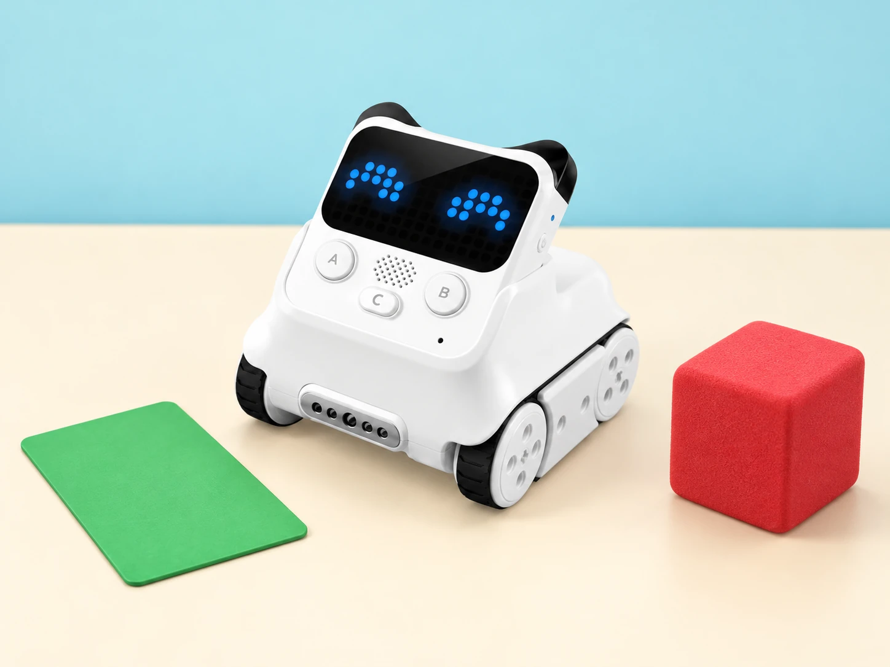
Fase 3 · Expliquem i registrem
En la configuració cap avall, programeu el botó A i una condició si color = verd: avanceu només un tram curt a velocitat baixa si la lectura coincideix; altrament, quedeu-vos aturats. En la configuració cap avant, feu una prova independent si obstacle detectat: atureu-vos, gireu a l’esquerra una quantitat limitada i avanceu només una casella de maqueta abans d’aturar-vos. El bloc de proximitat es tracta com una detecció, no com una mesura exacta de distància.
Registreu per separat orientació, entrada, valor/estat, condició vertadera o falsa i resposta.
quan es prem A si el color llegit és verd avança a velocitat baixa un tram curt si no atura els motors quan es prem A // en la prova amb el sensor orientat cap avant si es detecta un obstacle atura els motors gira a l'esquerra una vegada avança una casella i aturaFase 4 · Apliquem i millorem
Completeu una bateria de casos en dues tandes: amb el sensor cap avall, targeta verda i no verda; cap avant, obstacle present i absent. Feu tres intents per cas sense moure la llum ni el material entre lectures. Si el color no es reconeix de manera estable, augmenteu la superfície de la targeta o useu una targeta d’entrada simulada. Si l’obstacle no es detecta, reviseu l’orientació i el bloc utilitzat.
No combineu els resultats com si el robot haguera llegit ambdues entrades en un mateix instant.
Fase 5 · Comprovem i reflexionem
L’estació de servei i el túnel de la marjal (40 min)
Fase 1 · Activem i prediem
Recupereu les condicions vertadera/falsa de L7 i compareu diverses instruccions si amb un repeteix que conté una condició. El repte principal adapta la reentrada al circuit de The Racing Game II: Codey Rocky arriba a una estació de servei en tres orientacions possibles —cap a l’esquerra, cap a la dreta o cap avant— i ha de trobar l’única eixida. Predigueu què indica l’obstacle davant del sensor i per què cal tornar a comprovar-lo després de cada gir.
Com a segona prova independent, travessareu un túnel fosc i comparareu lectures de llum amb un operador. No es llegiran color, obstacle i llum alhora.
Fase 2 · Explorem i construïm
Construïu amb llibres o cartó una estació en forma d’U, amb tres costats tancats, una única eixida i una recta de pista davant; prepareu també un túnel curt de cartolina per a la prova de llum, separada de la ruta. Situeu el robot en les tres orientacions inicials del repte, sempre dins de l’U i amb espai lliure per a girar. Gireu el sensor IR cap avant i comproveu que detecta les parets;
useu el sensor de llum integrat només en la prova del túnel. Abans d’engegar, retireu qualsevol objecte solt i valideu la distància d’aturada a potència baixa.
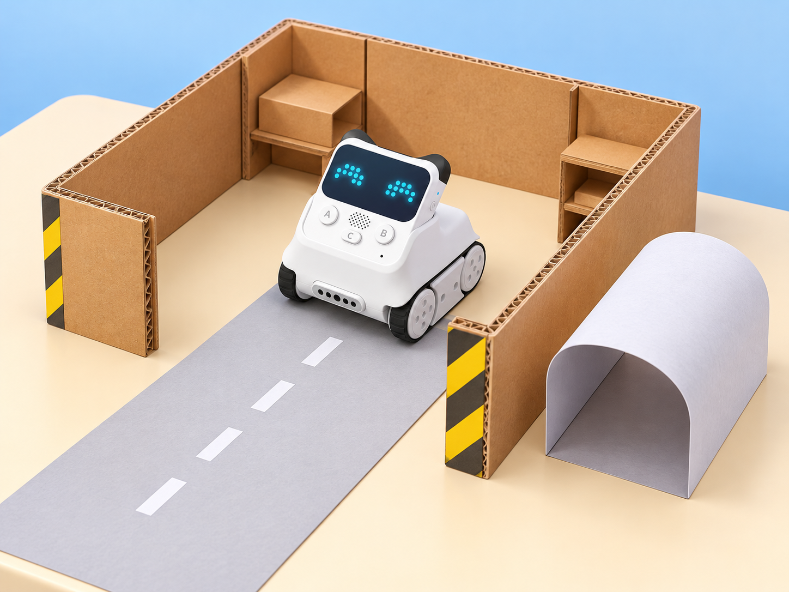
Fase 3 · Expliquem i registrem
Programeu l’eixida amb una condició dins d’un bucle comptat: si hi ha una paret davant, gireu a la dreta 90°; repetiu la comprovació tres vegades com a màxim. Quan el sensor veja l’eixida lliure, el robot s’hi haurà orientat sense dependre de la posició inicial. En arribar a l’obertura, gireu a l’esquerra 90° per incorporar-vos a la recta del circuit i avanceu a la velocitat més alta que hàgeu comprovat abans que cap roda sobreïsca del traçat.
Anoteu orientació inicial, nombre de girs, eixida detectada i resultat de la incorporació.
quan es prem A repeteix 3 vegades si hi ha obstacle davant gira a la dreta 90 graus si l'eixida està lliure gira a l'esquerra 90 graus avança pel circuit a velocitat validadaEl bucle és finit i limita els girs a tres intents; no l’embolcalleu amb un per sempre. La consigna oficial de continuar a gran velocitat s’adapta a una velocitat màxima local validada, perquè una recta curta o una bateria baixa poden fer perdre el control del model.
Fase 4 · Apliquem i millorem
Proveu la ruta des de les tres orientacions, amb tres intents comparables per orientació. Registreu els girs i si arriba a la pista; canvieu una sola part del codi si falla. Com a extensió del repte oficial, en arribar a l’estació el Codey pot mostrar una expressió inventada i un indicador lluminós; afegiu un so breu i baix només si tot el grup el troba còmode. No feu sonar l’altaveu mentre el robot es mou.
En una tanda separada, useu el sensor de llum de Codey per comparar el passadís clar amb el túnel ombrejat. Registreu primer les lectures i trieu un llindar entre els valors observats: són valors relatius del sensor, no lux calibrats. Dins d’un segon repeteix 3, llegiu la llum, espereu un segon i apliqueu l’operador <: si queda per davall del llindar, enceneu l’indicador RGB blanc i reduïu la velocitat; si no, apagueu l’indicador i manteniu la velocitat de prova.
Feu tres lectures per condició i no presenteu el llindar com una mesura de seguretat real.
repeteix 3 vegades llig la llum ambiental espera 1 segon si la llum és menor que el llindar encén l’indicador RGB blanc mou-te a velocitat reduïda si no apaga l’indicador RGB mantín la velocitat de provaFase 5 · Comprovem i reflexionem
Compareu els girs observats en les tres orientacions i la taula de llum clara/ombra. Expliqueu per què el bucle redueix codi repetit, què retorna una comparació < i quina diferència hi ha entre el mòdul IR orientat cap avant i el sensor de llum de Codey.
Una barra que respon al paisatge sonor (40 min)
Fase 1 · Activem i prediem
Al museu escolar de l’Albufera, una pantalla interpreta l’activitat sonora de l’entorn com una barra de tres altures. Sense gravar ni identificar cap font, predigueu què hauria de mostrar davant d’una lectura baixa, mitjana o alta. El sensor retorna un valor de nivell relatiu; no és una mesura calibrada de decibels ni permet saber qui o què ha produït el so.
Fase 2 · Explorem i construïm
Localitzeu el sensor de so de Codey en la versió de mBlock disponible i observeu com canvia la lectura davant de tres estímuls suaus i acordats. No feu crits ni sorolls sobtats: es pot treballar amb el soroll ambient habitual o amb una seqüència de valors simulats en paper si el sensor o el bloc no està disponible. Anoteu que la lectura depén del dispositiu, la distància i l’entorn; no enregistreu àudio.
Fase 3 · Expliquem i registrem
Construïu la barra de tres altures amb tres condicions dins d’un únic bucle per sempre. El pla docent defineix nivell > 20, 10–20 i nivell < 10, i demana l’operador i per a la franja central; el quadern d’alumnat escriu aquesta franja com 10 < nivell < 20, sense assignar explícitament els valors exactes 10 i 20.
Perquè la proposta local classifique totes les lectures, acordem i anotem una convenció pròpia: 10 i 20 també mostren la barra mitjana (10 ≤ nivell ≤ 20). Són llindars didàctics del repte, no valors universals del sensor. Traceu 9, 10, 15, 20 i 21 abans de provar-los.
per sempre llig el nivell de so si nivell > 20 mostra barra alta si nivell >= 10 i nivell <= 20 mostra barra mitjana si nivell < 10 mostra barra baixa| Lectura de prova | Eixida local | Motiu |
|---|---|---|
| 9 | Barra baixa | Menor que 10 |
| 10 | Barra mitjana | Límit assignat a la franja central per convenció local |
| 15 | Barra mitjana | Dins de la franja central |
| 20 | Barra mitjana | Límit assignat a la franja central per convenció local |
| 21 | Barra alta | Major que 20 |
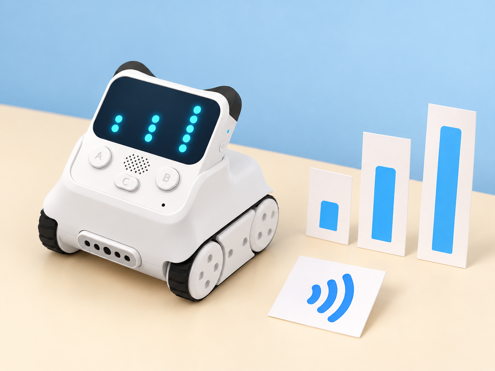
Fase 4 · Apliquem i millorem
Comproveu cada frontera (9, 10, 20 i 21) amb l’entrada real o amb valors simulats, i contrasteu-la amb la taula. Després, feu l’extensió oficial: afegiu una resposta de color amb l’indicador RGB o dividiu una de les franges en dos nivells. Manteniu el bucle de lectura i torneu a provar totes les fronteres que puga afectar el canvi.
Fase 5 · Comprovem i reflexionem
Funcions de bon dia (40 min)
Fase 1 · Activem i prediem
Recupereu una condició de L9 i expliqueu què fa el programa si és certa o falsa. Recordeu també com s’inicia un projecte carregat a Codey i com vau trobar un error de codi en L4. Presenteu l’obertura del museu de la marjal: abans d’entrar el públic, cal preparar una animació de benvinguda. Pregunteu com podem donar un nom curt a una seqüència d’accions perquè siga fàcil de tornar a cridar. Una funció agrupa instruccions sota un nom;
no és només un esdeveniment ni una animació.
Fase 2 · Explorem i construïm
En equips, repartiu targetes amb funcions fictícies d’obertura (preparar la pantalla, mostrar la icona, fer una pausa, reproduir un so opcional) i algunes que no corresponen a l’esdeveniment. Doneu un nom clar a cada grup d’accions, trieu quines funcions cal cridar quan Codey s’inicia i ordeneu-les. Compareu si alguna sobra, si una s’ha cridat dues vegades o si el nom no descriu les accions. Es pot llegir la seqüència sense representar-la corporalment.
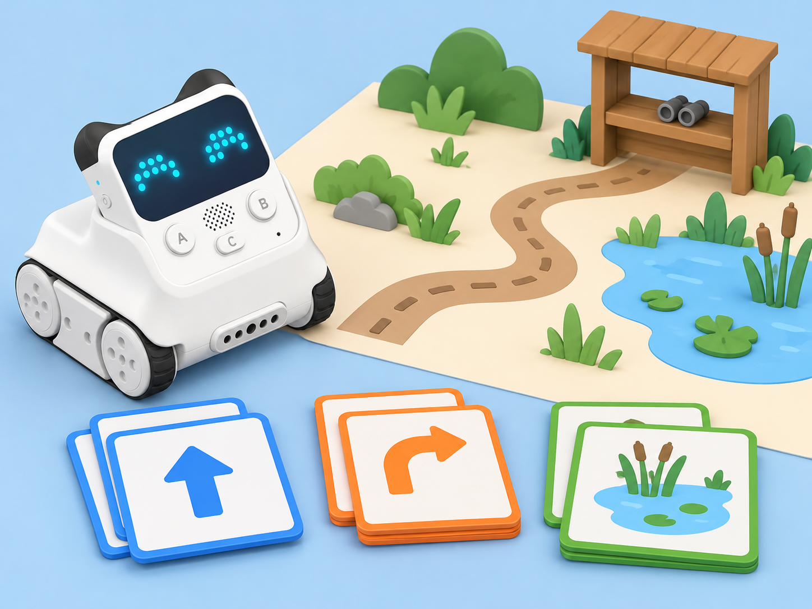
Fase 3 · Expliquem i registrem
En mBlock 5, obriu Els meus blocs / My Blocks, creeu una funció pròpia benvinguda_marjal i definiu-hi una animació de dos fotogrames a la matriu: icona de la marjal, pausa llegible, icona de benvinguda i esborrat. Després, crideu-la des de l’esdeveniment d’inici de Codey. Traceu l’ordre: esdeveniment → crida → instruccions de la funció → final de la seqüència. Registreu la diferència entre definir una funció i cridar-la.
defineix benvinguda_marjal mostra icona de la marjal espera 1 segon mostra icona de benvinguda espera 1 segon esborra la matriu quan Codey inicia crida benvinguda_marjalFase 4 · Apliquem i millorem
Personalitzeu els dos fotogrames i compareu la funció amb una versió que repetisca els mateixos blocs sense funció. Com a extensió, afegiu un esdeveniment del botó A que cride de nou benvinguda_marjal: comproveu que una única definició serveix tant en iniciar com en prémer A. El so és opcional; mantingueu l’alternativa visual silenciosa.
Fase 5 · Comprovem i reflexionem
Petit vigilant I: missions i distàncies (40 min)
Fase 1 · Activem i prediem
Recupereu la funció benvinguda_marjal de L10: què vol dir definir-la i què cal fer perquè s’execute? Recordeu una errada que vau depurar en L4 i la relació entre distància, velocitat i temps. El museu escolar vol una maqueta de patrulla amb dos recintes quadrats connectats per un passadís. En parelles, dibuixeu l’inici, els dos quadrats i la connexió; mesureu un costat i el passadís amb la mateixa unitat.
Predigueu quina seqüència es pot encapsular en una funció repetible i quines dades falten abans de calcular el temps del trajecte.
Fase 2 · Explorem i construïm
Marqueu la ruta sobre paper gran o amb cinta de pintor en una zona de terra lliure i plana; manteniu el robot allunyat de taules, escales i passadissos de circulació. Mesureu la distància que recorre Codey Rocky durant un segon a una potència baixa i repetible; repetiu tres vegades i calculeu velocitat = distància ÷ temps amb la mitjana de les tres lectures. Anoteu costat, connexió, potència, durada i distància observada.
El valor d’exemple del manual (14 cm per costat i 7 cm/s a potència 50%) és només una dada per practicar el càlcul: mesureu el robot real abans d’usar-lo.
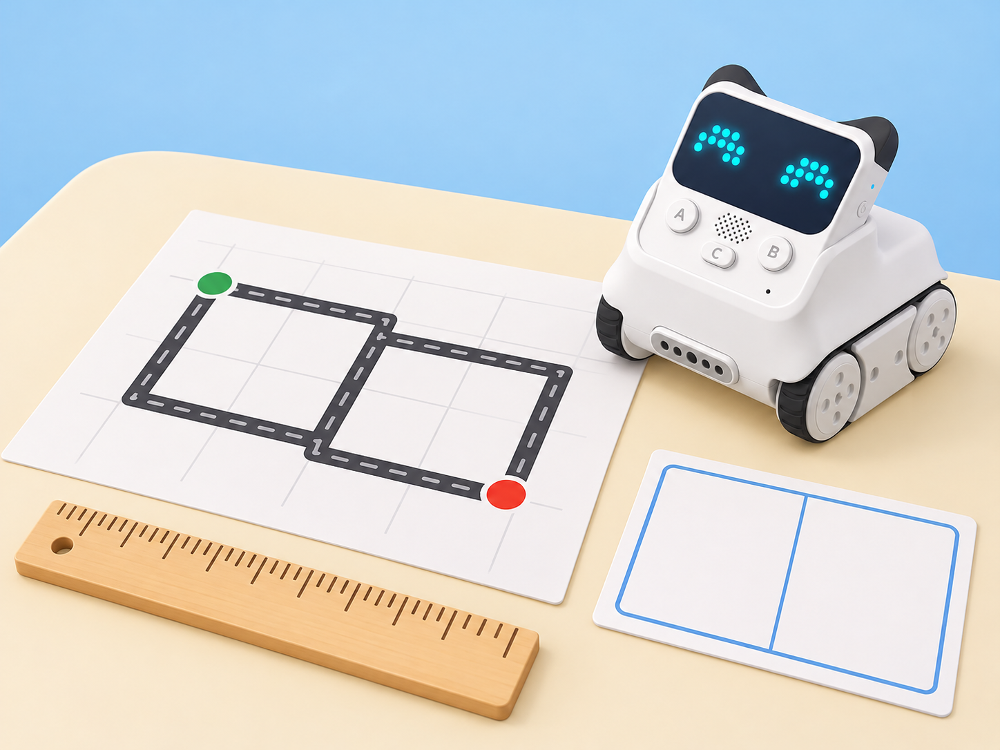
Fase 3 · Expliquem i registrem
Definiu quadrat com quatre repeticions de «avança una longitud de costat i gira a la dreta». Calculeu el temps aproximat de cada costat amb temps = distància ÷ velocitat mesurada, i calibreu per separat el temps de gir de 90° en una prova curta. Si un costat mesura 14 cm i el robot recorre 7 cm/s en la prova, el càlcul inicial és 2 s; no pressuposeu que eixa relació es manté a qualsevol potència o superfície.
defineix quadrat repeteix 4 avança durant temps_costat gira a la dreta durant temps_gir quan es prem A crida quadrat avança durant temps_connexio crida quadratTraceu al mapa la distància total prevista: 2 × (4 × costat) + connexió. Expliqueu per què cridar la funció dues vegades repeteix el perímetre i per què el tram de connexió va entre les dues crides.
Fase 4 · Apliquem i millorem
Executeu una volta a potència baixa amb una persona al costat del robot i compareu la posició final amb la línia. Ajusteu una sola dada cada vegada (temps de costat, potència o gir), torneu a provar i registreu l’error. Després, completeu el trajecte amb les dues crides de quadrat.
Com a extensió que apareix en el manual complementari de Codey Rocky & Neuron, proveu una condició de so alt amb una targeta o una lectura ambiental suau: registreu un cas per davall, un igual i un per damunt del llindar triat, sense gravar ni demanar crits. El manual proposa que el robot avance o gire a màxima potència; en aquesta adaptació, la condició activa només una icona LED estacionària, perquè un so sobtat no inicie un desplaçament inesperat.
Fase 5 · Comprovem i reflexionem
Petit vigilant II: patrullem la segona planta (40 min)
Fase 1 · Activem i prediem
Recupereu el plànol de patrulla de la primera planta, construït en L11, i expliqueu com reutilitzàveu quadrat. El repte oficial augmenta la dificultat amb més sales i passadissos: cal definir dues funcions, una per al quadrat superior i una altra per a l’inferior, amb girs en sentits oposats, i repetir la seqüència de sales superiors. En la nostra maqueta, dibuixareu una ruta pròpia amb una sala inferior, dues superiors i tres connexions.
Predigueu per què les dues funcions de sala no poden compartir el mateix sentit de gir. El robot no puja escales: cada planta és un plànol pla diferent.
Fase 2 · Explorem i construïm
Dibuixeu un plànol propi pla amb una sala inferior i dues superiors, unides per tres passadissos rectes; marqueu inici, final i sentit del recorregut. Mesureu costats i connexions amb una unitat comuna. Reutilitzeu la velocitat i els girs calibrats en L11, però repetiu la calibració si han canviat terra, càrrega o potència. Una altra parella segueix la ruta amb el dit i comprova que les sales superior i inferior requereixen sentits de gir diferents.
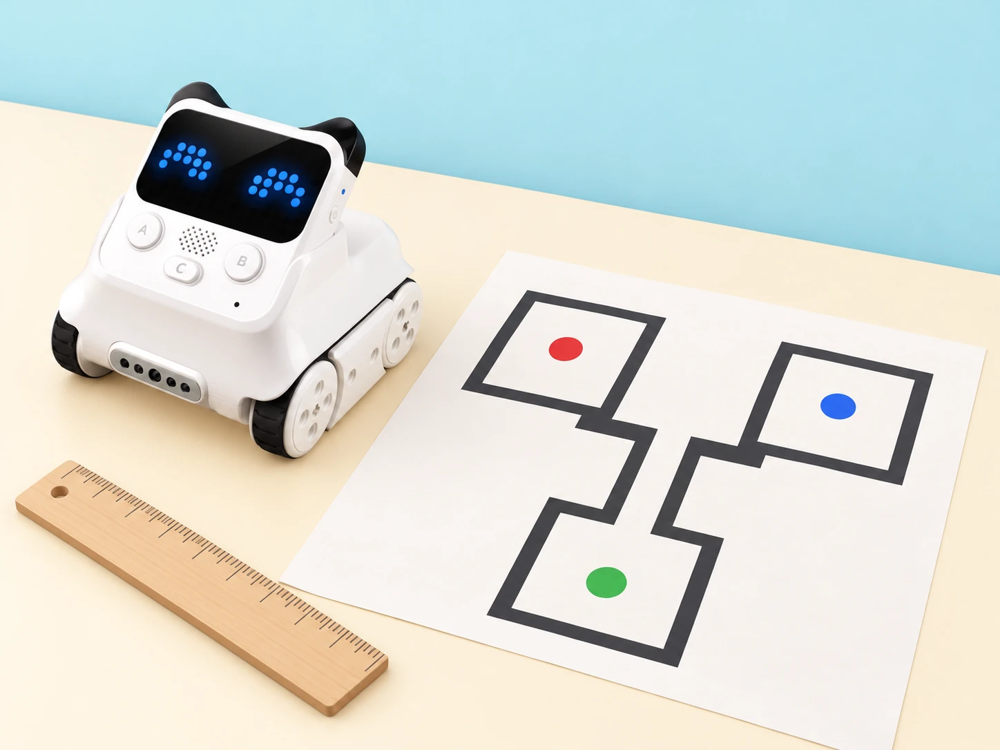
Fase 3 · Expliquem i registrem
Definiu quadrat_inferior amb quatre avanços i girs a la dreta, i quadrat_superior amb quatre avanços i girs a l’esquerra. Creeu planta_2_marjal: crideu primer la sala inferior, avanceu una connexió i, dues vegades, crideu la sala superior i avanceu una connexió. Assigneu el programa al botó A. Abans de provar, calculeu distància recta = 3 × (4 × costat) + 3 × passadís; estimeu el temps recte dividint aquesta distància per la velocitat mesurada i sumeu per separat els 12 girs calibrats.
El plànol i les mesures són propis, no una còpia del mapa de la targeta oficial.
defineix quadrat_inferior repeteix 4 avança durant temps_costat gira a la dreta 90 graus defineix quadrat_superior repeteix 4 avança durant temps_costat gira a l’esquerra 90 graus defineix planta_2_marjal crida quadrat_inferior avança durant temps_passadís repeteix 2 crida quadrat_superior avança durant temps_passadís quan es prem A crida planta_2_marjalCompareu el càlcul amb la traça del programa. Identifiqueu les dues funcions de sala i planta_2_marjal com la funció principal. Expliqueu com la repetició evita duplicar les dues sales superiors i per què la sala inferior gira en sentit contrari.
Fase 4 · Apliquem i millorem
Proveu primer cada tipus de sala i després una connexió, sempre a potència baixa. Registreu distància prevista i observada per tram; canvieu una sola durada cada vegada. Quan la ruta funciona, afegiu l’extensió oficial: una icona a la pantalla i un indicador de llum en acabar cada sala; el so és opcional, breu i de volum baix, només quan el robot està aturat. Executeu la patrulla completa amb una persona observadora al costat.
Atureu-la si ix del mapa o s’acosta a una zona ocupada. Si no hi ha una zona segura, valideu la composició de funcions amb una fitxa i codi en paper.
Fase 5 · Comprovem i reflexionem
La caixa de llavors de l’hort (40 min)
Fase 1 · Activem i prediem
Presenteu un registre fictici del banc comunitari de llavors amb 10 fitxes. Expliqueu la variable com un contenidor amb nom i valor que es pot reemplaçar. En parelles, proposeu un nom clar per a la reserva i prediu què passa quan n’afegim, en traiem o comparem el valor amb un llindar.
Fase 2 · Explorem i construïm
Prepareu el registre amb reserva = 10 i targetes que adapten tota la partida oficial. En ordre, llegiu-les i actualitzeu la variable; una altra persona comprova cada càlcul.
| Targeta pròpia del banc de llavors | Canvi de reserva |
|---|---|
| Plantem 2 fitxes | −2 |
| Si una targeta de temperatura simulada indica més de 5 °C, recuperem 10 fitxes del magatzem de classe | +10 si es compleix |
| Preparem 3 fitxes al migdia | −3 |
| Arriba una aportació de 5 fitxes | +5 |
| Compartim 3 fitxes amb un altre banc | −3 |
| Una etiqueta es trenca i apartem 4 fitxes del recompte | −4 |
| Juguem 3 rondes de pedra-paper-tisora: guanyar +1, perdre −1, empatar 0 | segons cada ronda |
| Usem una fitxa més | −1 |
| Intercanviem 7 fitxes per material de planter | −7 |
Si reserva < 5, reposició des del magatzem de classe | +10 si es compleix |
Si reserva > 12, Codey mostra una icona de celebració | eixida visual |
La temperatura és una entrada simulada en una targeta: Codey Rocky no la mesura en aquesta activitat. Les fitxes són valors del joc, no llavors reals ni indicacions per a recollir-les de l’entorn. Amb una targeta de temperatura simulada de 6 °C i les rondes guanyar/perdre/empat, la traça és 10 → 8 → 18 → 15 → 20 → 17 → 13 → 13 → 12 → 5.
Registreu cada pas i comproveu els dos llindars també per separat: 4 < 5 activa la reposició i 5 < 5 no; 13 > 12 activa la resposta i 12 > 12 no.
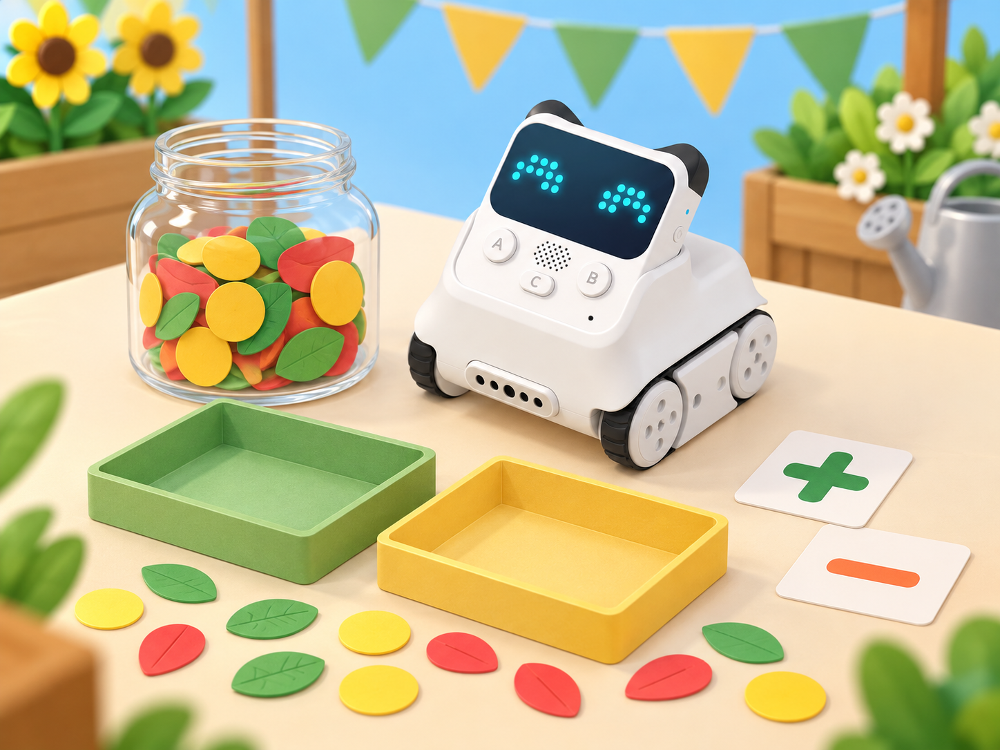
Fase 3 · Expliquem i registrem
Traduïu als blocs una assignació inicial, un canvi positiu i un de negatiu, la comparació de temperatura simulada i les dues condicions de reserva. Si reserva < 5, augmenteu-la en 10 i mostreu el valor nou; si reserva > 12, mostreu una icona de celebració. Anoteu valor anterior, operació, valor nou i resposta de cada condició. Els llindars són regles del joc d’aula, no recomanacions agronòmiques.
Fase 4 · Apliquem i millorem
Comproveu també les variables de moviment amb Codey Rocky en una zona lliure: assigneu velocitat = 30 i feu un avanç d’un segon; atureu i registreu el resultat. Després assigneu angle = 70 i proveu el gir; canvieu el valor a 140 i compareu-lo. Si la reserva supera 12, la resposta del joc original és una volta completa de celebració: proveu-la només a potència baixa, amb l’espai buit i una persona observadora;
si no és segur o el valor depén de la configuració, useu una animació LED i identifiqueu el moviment com a simulat. Marqueu sempre quan una prova és física o simulada.
Fase 5 · Comprovem i reflexionem
Operacions amb el marcador del mercat (40 min)
Fase 1 · Activem i prediem
Obriu un marcador fictici que comença a zero. Predigueu què mostrarà després d’afegir una unitat amb A o llevar-ne una amb B; decidiu com representareu valors negatius sense convertir el joc en una puntuació d’alumnes.
Fase 2 · Explorem i construïm
Creeu una variable marcador i assigneu-li el valor 0 en iniciar el programa. Configureu A perquè l’incremente en 1 i B perquè el decremente en 1. Mostreu el resultat en la matriu LED després de cada canvi. Compareu l’operació manual amb el bloc de canvi de variable i observeu què significa restar quan el valor és zero.
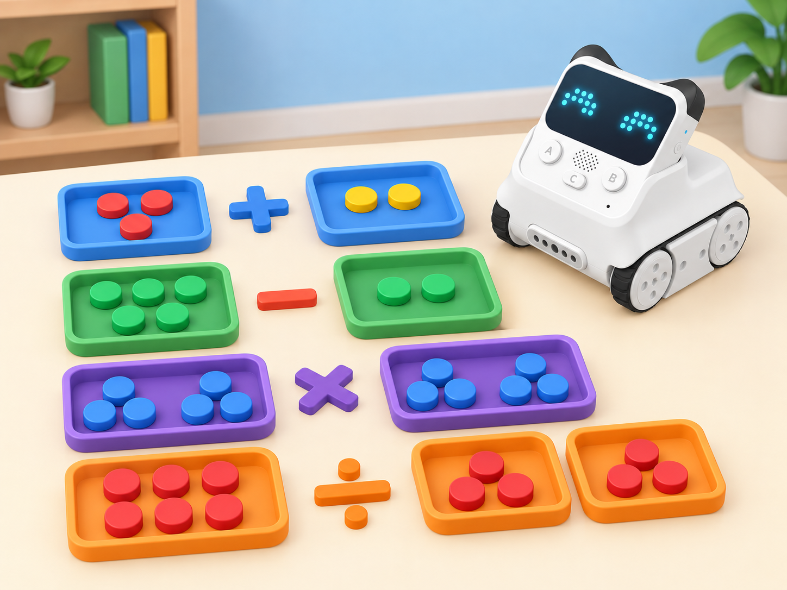
Fase 3 · Expliquem i registrem
El repte oficial presenta dues tasques separades. Primer proveu la versió de suma/resta; després guardeu-la o substituïu-la per la versió de multiplicació/divisió. No afegiu els dos programes als mateixos botons alhora: així, A no activarà dues operacions inesperades. En la segona versió, inicialitzeu marcador a 4; A multiplica el valor per 2 i B el divideix per 2. En cada cas, calculeu el resultat amb un bloc d’operadors, assigneu-lo a la mateixa variable i mostreu-lo.
quan Codey inicia fixa marcador a 4 mostra marcador quan es prem A fixa marcador a (marcador × 2) mostra marcador quan es prem B fixa marcador a (marcador ÷ 2) mostra marcadorTraceu manualment les dues versions amb 0, 4 i −4. En la versió d’operacions, compareu també marcador = 3: dividir un nombre imparell entre 2 pot produir un valor no enter segons els blocs i el tipus de dada de la versió instal·lada. Anoteu el que el programa mostra en lloc de suposar que sempre arrodoneix de la mateixa manera.
Fase 4 · Apliquem i millorem
Canvieu el valor inicial i el factor (per exemple, de 2 a 3), i repetiu les proves en una còpia de la segona versió. Verifiqueu quin tipus de forma accepta el bloc de variable com a operand i manteniu la mateixa variable en l’inici, A i B. Recordeu que la pantalla mostra valors entre −999 i 9999; si el càlcul ix d’aquest interval, anoteu el límit en lloc d’interpretar la pantalla com un resultat complet.
Fase 5 · Comprovem i reflexionem
El comptador de la fira de l’horta (40 min)
El pla oficial treballa variables, compte arrere i aleatorietat amb dues tasques: un compte arrere cooperatiu i un joc de nombre objectiu. En aquesta adaptació, la classe prepara l’obertura d’una fira escolar de l’horta i compta fitxes de cistelles de paper. Es mantenen les trenta iteracions d’un segon, l’objectiu aleatori entre 1 i 20, el comptador i la comparació d’igualtat; desapareixen l’explosiu, la pressió per acabar de pressa i el pas del robot entre persones.
Les fruites i les fitxes són una maqueta: Codey Rocky no les detecta ni en fa inventari.
Fase 1 · Activem i prediem
Mostreu una parada de fira de paper encara tancada i una variable temps que comença en 30. Predigueu quantes actualitzacions hi haurà si cada segon es resta una unitat i què indicarà Codey Rocky quan el compte arribe a zero. Acordeu que és una simulació de l’obertura, no un cronòmetre per a pressionar cap participant.
Fase 2 · Explorem i construïm
En iniciar, assigneu 30 a temps i mostreu-lo en la matriu. En prémer A, comenceu el compte arrere: espereu un segon, resteu 1, mostreu el valor i repetiu 30 vegades. Quan temps arriba a 0, atureu el bucle i mostreu una icona de fulla o parada oberta amb una llum acordada; el so és opcional i ha de tindre una alternativa silenciosa. El robot roman sobre una taula estable: per repartir torns, l’equip mou una targeta de paper, no el dispositiu.
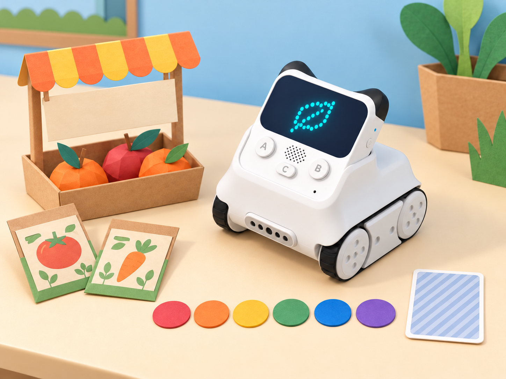
Fase 3 · Expliquem i registrem
Traceu els tres primers segons i el final. Comproveu que el valor inicial, la repetició i la condició d’aturada produeixen exactament 30 actualitzacions, no 29 ni 31. Registreu què passa si s’inicia el programa dues vegades i proveu la cancel·lació abans del final. La cancel·lació és una ampliació pròpia en un projecte separat: no pot deixar actiu cap script del temporitzador.
Fase 4 · Apliquem i millorem
Feu dues ampliacions com a projectes separats. En una còpia del compte arrere, assigneu B a cancel·lar: ha d’aturar els scripts de temps i mostrar una icona neutra de pausa; comproveu que el temporitzador no continua en segon pla. En el segon projecte, adapteu The Explosive Number com un recompte cooperatiu de cistelles de paper: inicialitzeu objectiu i comptador a zero; en prémer A, genereu un objectiu aleatori d’1 a 20 i reinicieu el comptador;
cada pulsació de B suma 1 i mostra el valor. Quan comptador = objectiu, mostreu la icona de parada oberta. Aquesta puntuació representa només pulsacions programades, no existències ni una classificació real de la collita. No combineu els dos projectes en els mateixos botons.
quan Codey inicia fixa objectiu a 0 fixa comptador a 0 quan es prem A fixa comptador a 0 fixa objectiu a nombre aleatori entre 1 i 20 mostra icona de preparació quan es prem B canvia comptador en 1 mostra comptador si comptador = objectiu mostra icona de parada oberta encén la llum neutraPer provar la condició sense dependre de l’atzar, substituïu temporalment l’assignació per objectius fixos 1 i 20; després proveu objectiu − 1, objectiu i objectiu + 1. Només la igualtat ha d’activar el missatge. Restaureu el bloc aleatori i comproveu que cada A reinicia comptador abans d’una ronda nova. L’atzar serveix per al joc, no per a seguretat, prediccions de collita o xifratge.
Fase 5 · Comprovem i reflexionem
Pedra, paper i tisora (40 min)
Fase 1 · Activem i prediem
Representeu les tres opcions amb símbols neutres i acordeu la regla: pedra guanya a tisora, tisora a paper i paper a pedra; dues opcions iguals són empat. Abans de programar, completeu una matriu amb les nou combinacions i decidiu com registrareu el resultat sense guardar noms ni puntuacions individuals.
Fase 2 · Explorem i construïm
Inicialitzeu gest, guanys, derrotes i empats a zero. Quan Codey Rocky es sacseja, assigneu a gest un nombre aleatori entre 0 i 2 i mostreu el símbol corresponent en la matriu LED. En el quadern d’alumnat i el manual docent, la correspondència és 0 = pedra, 1 = tisora, 2 = paper; un altre resum oficial de la unitat intercanvia els valors de tisora i paper.
Ací seguim la correspondència del repte docent i la mantindrem igual en totes les targetes i proves. Si mBlock no exposa el giroscopi o l’atzar, useu A i targetes de nombres, i identifiqueu-ho com a simulació.
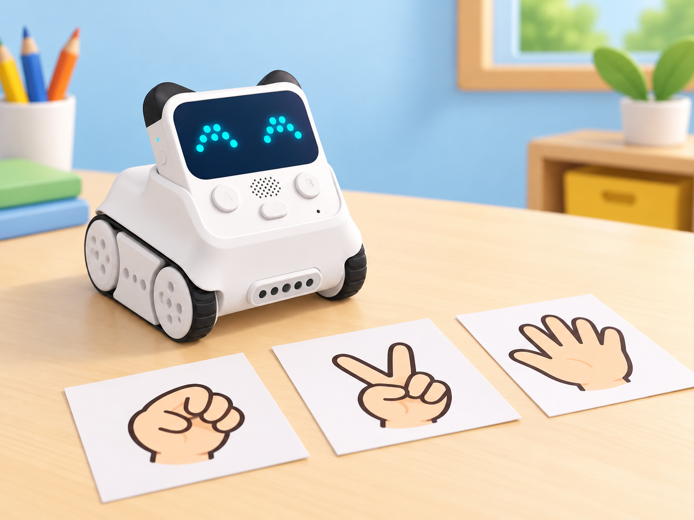
Fase 3 · Expliquem i registrem
Després de comparar el gest de Codey amb el de la parella, registreu el resultat amb els botons: A suma 1 a guanys, B suma 1 a derrotes i C suma 1 a empats. Cada botó mostra una expressió pròpia diferent; un so breu i baix és opcional i sempre es pot substituir per la resposta visual. Traceu les nou combinacions i comproveu que només canvia el comptador triat.
El robot genera el seu gest però no classifica automàticament el resultat: l’equip aplica les regles i prem el botó corresponent. Manteniu un màxim de sis esdeveniments de programa (inici, sacsejada, A/B/C i llum). L’atzar determina el gest del joc; no és una predicció ni una mesura sobre les persones.
quan Codey es sacseja estableix gest a nombre aleatori entre 0 i 2 si gest = 0 mostra símbol pedra si no, si gest = 1 mostra símbol tisora si no mostra símbol paper quan es prem A canvia guanys per 1 mostra expressió de celebracióquan es prem B canvia derrotes per 1 mostra expressió de revisióquan es prem C canvia empats per 1 mostra expressió tranquil·la quan la llum ambiental supera 2 si guanys + derrotes + empats > 0 mostra guanys / (guanys + derrotes + empats) si no mostra «sense rondes»Fase 4 · Apliquem i millorem
Executeu la matriu completa de nou combinacions i reviseu si cada resultat coincideix amb les regles. Com a extensió, mostreu en decimal la proporció guanys ÷ (guanys + derrotes + empats) quan hi haja almenys una ronda i la lectura de llum ambiental siga superior a 2. Hi ha una discrepància en el recurs oficial: el text diu «superior a 2», però el bloc d’exemple mostra la condició < 2; aquesta proposta segueix el text i ho registra com una convenció local.
Proveu lectures 1, 2 i 3: només 3 ha de mostrar la proporció. El sensor dona una lectura pròpia del dispositiu, no lux calibrats; si el bloc no està disponible, simuleu les tres lectures. Per expressar després el resultat com a percentatge, multipliqueu la proporció per 100. Abans de dividir, comproveu que guanys + derrotes + empats > 0.
Fase 5 · Comprovem i reflexionem
Un circuit jugable per al museu (40 min)
La guia docent oficial de My Speedway demana dissenyar escena i personatge, controlar el cotxe amb les quatre fletxes, retornar a l’inici quan ix de la pista, mostrar «win!» en tocar la línia roja de meta i afegir com a ampliació arbres que es mouen cap arrere. Aquesta adaptació crea un joc digital original d’un recorregut pel barri: no usa vehicles reals, rànquings ni proves de conducció.
Recupera de L16 variables i condicions, i converteix la lliçó en un cicle complet de disseny, prova, retorn i revisió.
Fase 1 · Activem i prediem
Mostreu tres referències de jocs (o dibuixos propis) i compareu com el color, la forma i el fons ajuden a entendre un personatge i el seu recorregut. Trieu un lloc fictici pròxim —pati, plaça o camí de l’horta— i definiu la idea del joc, l’estil visual, el punt d’inici, el color de la pista, la zona fora de ruta i la línia roja d’arribada. Esbosseu un mapa amb aquests cinc elements abans d’obrir mBlock.
Fase 2 · Explorem i construïm
En mBlock, dibuixeu o munteu un fons original amb pista ampla i distingible, línia d’inici, línia roja de meta i una zona fora de pista d’un color uniforme. Creeu un personatge digital original o adapteu-ne un de la biblioteca, assigneu-li un nom i establiu una posició inicial. Programeu les fletxes amunt, avall, esquerra i dreta amb desplaçaments curts; afegiu una alternativa de tecles en pantalla o targetes de direcció perquè no calga prémer ràpidament.
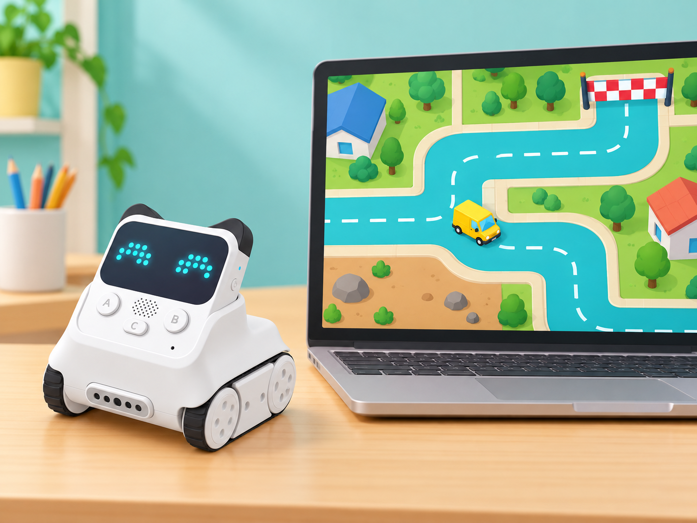
Fase 3 · Expliquem i registrem
Escriviu primer les regles en una taula de decisió. La meta roja s’ha de comprovar abans que el retorn per eixida de pista, perquè el color de meta no active les dues respostes alhora. Quan el joc està actiu, les fletxes actualitzen la posició; si el personatge toca la meta roja, canvia a l’estat guanyat, mostra «win!» durant dos segons i ignora més controls; si toca la zona fora de pista, torna a la posició inicial.
Feu pseudocodi i proveu separadament: dins de ruta, fora de pista, tocar meta i prémer després d’haver guanyat.
quan s'inicia el joc fixa estat a «actiu» vés a la posició inicial per sempre si estat = «actiu» i toca la línia roja fixa estat a «guanyat» mostra «win!» durant 2 segons si estat = «actiu» i toca el color de fora de pista vés a la posició inicial quan es prem una fletxa si estat = «actiu» mou el personatge en la direcció indicadaFase 4 · Apliquem i millorem
Afegiu l’ampliació oficial: arbres del fons es desplacen cap arrere mentre el cotxe digital avança; el moviment del fons ha de ser decoratiu i no alterar les regles de col·lisió. Proveu la partida amb una altra parella. Aquesta anota una instrucció confusa, un cas límit i una cosa que ja s’entén; reviseu una sola decisió de disseny i repetiu els casos afectats. No puntueu velocitat ni compareu persones.
Fase 5 · Comprovem i reflexionem
Un joc amb el giroscopi de Codey (40 min)
Fase 1 · Activem i prediem
Compareu com es controla un joc en ordinador, mòbil o consola i trieu una idea pròpia de recorregut. Definiu què representa inclinar Codey cap a l’esquerra i cap a la dreta, quin missatge rebrà el personatge del joc i com s’aturarà la partida. Inclinar el robot és una opció voluntària; es pot seguir la mateixa predicció des del diagrama o amb tecles.
Fase 2 · Explorem i construïm
Dissenyeu una escena i un personatge originals en mBlock. Creeu els esdeveniments Codey inclinat a l’esquerra i Codey inclinat a la dreta; cadascun mostra una icona i envia el missatge corresponent. Configureu el cotxe virtual perquè, en rebre el missatge, s’ature primer qualsevol altre script del mateix sprite i després comence un gir continu en el sentit indicat. Manteniu Codey sobre la taula i inclineu-lo suaument, sense alçar-lo ni sacsar-lo.
Si el calibratge del giroscopi està disponible en la versió de l’entorn, calibreu-lo abans de provar.
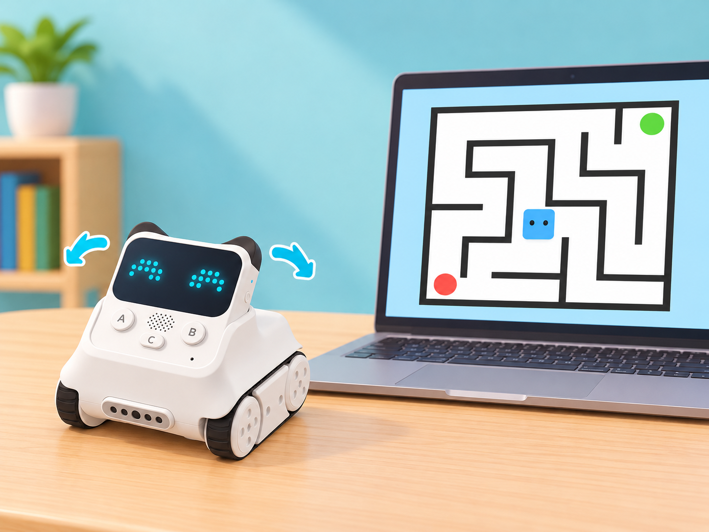
Fase 3 · Expliquem i registrem
Traceu la cadena entrada del giroscopi → missatge → aturada de l’script anterior → resposta de l’sprite. Proveu esquerra → dreta → esquerra, tornada a posició neutra i absència de missatge quan Codey està pla. En una còpia, lleveu temporalment el bloc d’aturada i feu el canvi esquerra/dreta: observeu com els dos bucles poden quedar actius i conflictuar. Restaureu-lo i comproveu que només es mou en la direcció del missatge més recent.
quan Codey s'inclina a l'esquerra mostra icona esquerra envia «gira_esquerra» quan Codey s'inclina a la dreta mostra icona dreta envia «gira_dreta» quan el personatge rep «gira_esquerra» atura els altres scripts d'aquest personatge per sempre digues «esquerra» gira 1 grau avança 1 pas quan el personatge rep «gira_dreta» atura els altres scripts d'aquest personatge per sempre digues «dreta» gira 1 grau avança 1 pasFase 4 · Apliquem i millorem
Trieu una idea de joc nova (per exemple, seguir un canal, esquivar una taca o arribar a una fita), construïu-ne un prototip curt, proveu-lo i corregiu una incidència cada vegada. Compareu els controls disponibles i trieu-ne un segons el joc i les necessitats del grup:
| Control | Punt fort | Límit a comprovar |
|---|---|---|
| Inclinació de Codey | Interacció directa amb el giroscopi integrat | Cal ajustar el gest i mantindre el robot estable sobre la taula |
| Teclat | Direcció precisa i ràpida | Requereix ordinador i prémer tecles |
| Targetes de direcció | Permet predir i acordar ordres sense dispositiu d’entrada | Una persona ha de traduir cada targeta a l’acció del joc |
Registreu per a cada alternativa precisió percebuda, facilitat d’ús i equipament necessari; són observacions d’aula, no mesures universals. Afegiu o retireu una opció a partir del retorn i repetiu la prova. Una variable d’estat pot substituir els missatges com a ampliació, però compareu-ne la llegibilitat amb el broadcast abans de triar.
Fase 5 · Comprovem i reflexionem
Autoavaluació: «he creat un control interactiu», «el conflicte que he trobat era…», «l’he resolt aturant…».
Mecàniques de joc I (40 min)
Fase 1 · Activem i prediem
Recupereu el joc de recorregut de L17 i convertiu-lo en una ruta virtual per a una barqueta missatgera de la marjal. Abans de tocar el codi, definiu tres tipus de regles: què representen els elements de joc, quines accions pot fer el personatge i quin resultat tanca la partida. Acordeu també una regla comuna i transparent perquè totes les persones juguen en les mateixes condicions.
Fase 2 · Explorem i construïm
Dibuixeu una pista ampla amb inici, meta i una zona exterior ben diferenciada; useu colors diferents per al canal, l’exterior i la meta, i no els feu tocar-se. En aquesta primera versió no afegiu obstacles ni cronòmetre. En mBlock, connecteu Codey i feu que A i B envien missatges de control a la barqueta; si la connexió no és disponible, useu les fletxes del teclat o targetes equivalents.
Definiu en una targeta de regles què vol dir «dins de la pista», què passa quan se n’ix i com es reconeix l’arribada.
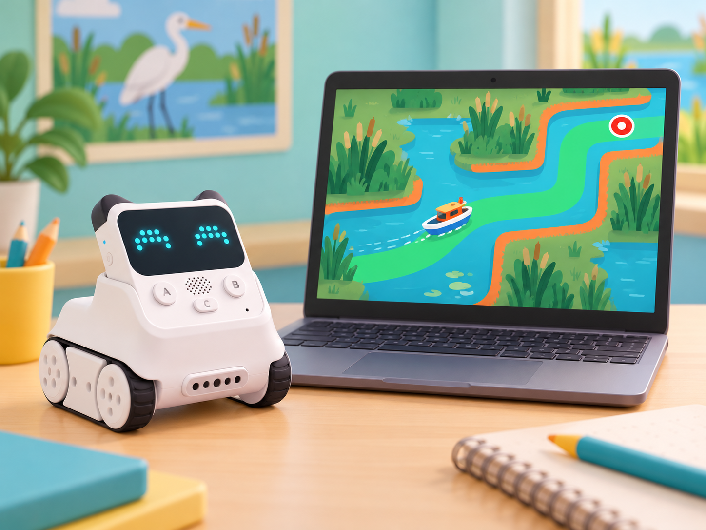
Fase 3 · Expliquem i registrem
Programeu els casos previstos amb branques excloents: si la barqueta toca la meta, mostra el senyal final i deixa de rebre ordres; si no, però toca l’exterior, torna a l’inici; altrament, continua pel canal. Així, una mateixa lectura no pot reiniciar i acabar la partida en el mateix cicle. El personatge de joc pot ser una il·lustració original: no es presenta com un robot físic ni com una representació exacta de fauna local.
quan es prem A en Codey envia el missatge «avança»quan es prem B en Codey envia el missatge «gira» quan el personatge rep «avança» o «gira» mou el personatge segons l'ordre si toca la meta mostra «missió completada» atura els controls si no, si toca la zona exterior torna a l'inici reinicia la ruta si no continua la rutaTraceu una partida que segueix la ruta, una que ix del canal i una que arriba a la meta. Proveu també una configuració incorrecta en què meta i exterior comparteixen color: detecteu el conflicte, separeu les zones i repetiu. En cada cas, comproveu que el resultat correspon a la targeta de regles.
Fase 4 · Apliquem i millorem
Feu una prova d’ús amb una parella que no haja programat la ruta. Observeu si pot explicar les regles només amb la pantalla i les instruccions disponibles. Recolliu un comentari concret i canvieu una sola condició o element del fons abans de repetir la prova. Per a començar, amplieu el canal i retireu els girs. Per a augmentar el repte, reduïu-ne l’amplària o afegiu una volta amb un temps acordat; cada equip compara el seu propi prototip abans/després, sense classificació entre persones.
Fase 5 · Comprovem i reflexionem
Mecàniques de joc II (40 min)
Fase 1 · Activem i prediem
Recupereu el prototip de L19 i distingiu tres maneres de crear conflicte: un obstacle fix o mòbil, un oponent (un altre personatge o obstacle que competeix per l’espai) i un dilema amb opcions que tenen avantatges diferents. L’obstacle mòbil farà el paper de conflicte principal; més avant afegireu un missatge col·leccionable i una tria de ruta. Predigueu com canvia una sola regla cada vegada.
Fase 2 · Explorem i construïm
Afegiu una branca a la deriva que baixa des de la part superior de la pantalla. Si toca la barqueta, aquesta torna a l’inici; després d’una pausa breu, la branca reapareix des de dalt. Si no hi ha contacte i la branca arriba al marge inferior, desapareix i la ruta continua. Feu-la gran i lenta en la primera prova, i afegiu controls visibles per a pausar o reiniciar.
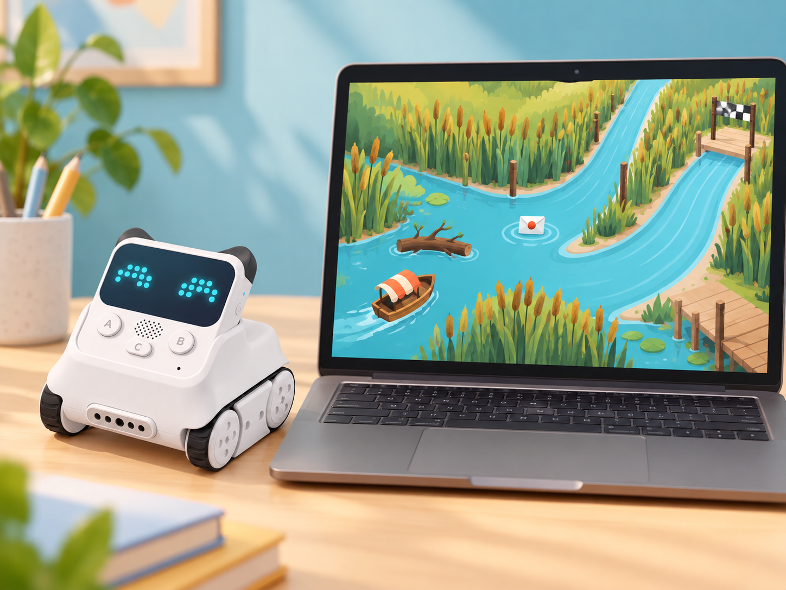
Fase 3 · Expliquem i registrem
Representeu les regles amb pseudocodi i una taula d’estats. La branca i una fitxa de missatge cauen alhora: si la branca toca la barqueta, es reinicia la posició i no es compta cap recollida d’aquell cicle; si no hi ha contacte amb la branca, però la barqueta toca la fitxa abans que arribe a terra, missatges augmenta en 1 i la fitxa desapareix; si la fitxa arriba a terra, desapareix sense sumar. En arribar al final del canal, el joc s’atura.
Feu que la branca i la fitxa reapareguen després d’una pausa, amb posicions separades perquè una ronda siga possible.
| Estat/esdeveniment | Resposta esperada | Evidència |
|---|---|---|
| Branca toca la barqueta | Torna a l’inici i la branca reapareix després d’una pausa | Posició abans/després |
| Branca passa sense tocar | Continua el joc | Cap reinici |
| Barqueta toca fitxa abans de terra | Suma un missatge i oculta la fitxa | Comptador +1 |
| Fitxa arriba a terra | La fitxa desapareix sense sumar | Comptador sense canvi |
| Barqueta arriba a la meta | Mostra «missió completada» i atura els controls | Estat final |
Proveu cada transició amb posicions fixades abans d’activar les aparicions aleatòries. Comproveu també que la col·lisió amb la branca tinga prioritat si els dos objectes queden superposats en una mateixa lectura.
quan comença la partida fixa estat a «en curs» fixa missatges a 0 situa la barqueta a l'inici per sempre si estat = «en curs» mou branca i fitxa cap avall si la barqueta toca la meta fixa estat a «completat» mostra «missió completada» si no, si la barqueta toca la branca situa la barqueta a l'inici amaga la branca espera 1 segon mostra la branca a dalt si no, si la barqueta toca la fitxa i la fitxa no ha arribat a terra canvia missatges per 1 amaga la fitxa si la fitxa arriba a terra amaga la fitxaFase 4 · Apliquem i millorem
Una altra parella prova el joc sense instruccions orals. Ajusteu una sola variable —velocitat de caiguda, mida de la branca, pausa entre aparicions o amplària de la ruta— i repetiu els casos afectats. Com a dilema, oferiu una drecera més curta però estreta i un camí més llarg però ample. Abans de triar, cada parella prediu el cost i el benefici; després registreu longitud en caselles, nombre de girs i missatges recollits, sense cronòmetre ni comparació entre grups.
La versió guiada pot eliminar l’obstacle mòbil; el repte avançat combina branca, fitxa i tria de ruta.
Fase 5 · Comprovem i reflexionem
Ràpid i segur (40 min)
Fase 1 · Activem i prediem
Recupereu la ruta virtual de L19–L20 i completeu-ne les condicions de victòria i de reinici. En aquesta sessió, Codey és el comandament d’un personatge digital dins d’mBlock: el robot físic es queda quiet sobre la taula, no participa en una cursa ni es mou a gran velocitat. Predigueu què ha de passar quan el cotxe virtual completa una volta, ix de la pista o toca un obstacle.
Fase 2 · Explorem i construïm
Dibuixeu una pista tancada i prou ampla, una línia blava de meta, una zona fora de pista i un obstacle gràfic. Col·loqueu l’inici just després de la línia blava i marqueu-lo com a «encara no ha eixit» fins que el personatge passe per la meta una primera vegada; així no guanya en començar. Useu A/B de Codey per enviar missatges al personatge en mBlock; si no hi ha connexió, manteniu el control amb teclat o targetes.
Prepareu un senyal visual de victòria i una resposta sonora opcional, sempre amb una alternativa visual silenciosa.
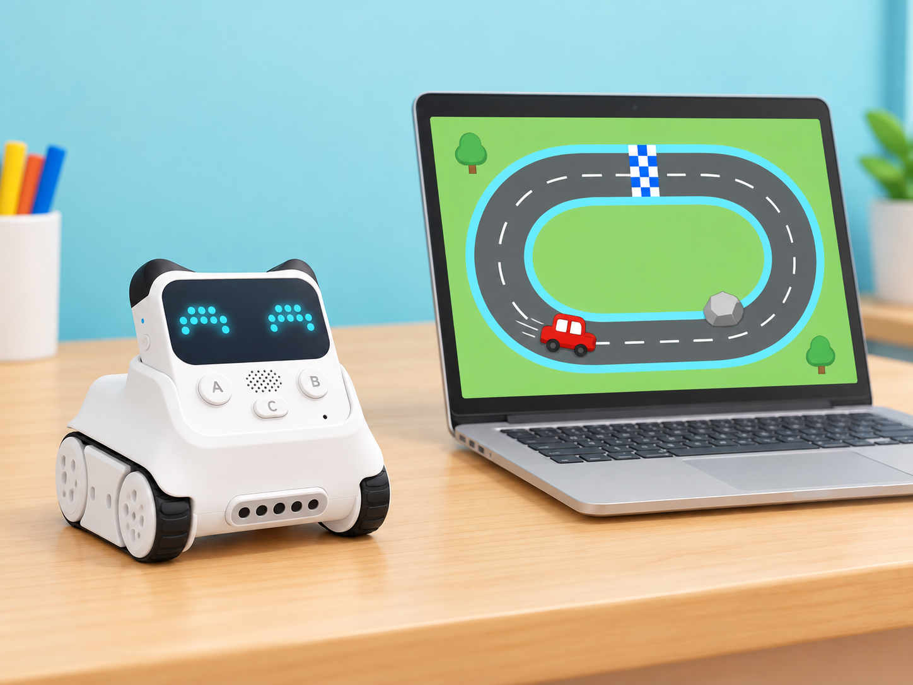
Fase 3 · Expliquem i registrem
Implementeu estats excloents. Si el personatge ix de la pista o toca el ratpenat, perd la volta. Mostreu un senyal visual de retorn i, si el grup ho tria, reproduïu un avís neutre i breu (mai una explosió); després, torna a l’inici i reinicia ha_eixit_meta a fals. Si no s’ha produït una pèrdua, marqueu ha_eixit_meta quan el personatge ja no toque la línia blava;
només quan aquesta variable és certa i el cotxe torna a tocar la línia, completa una volta, mostra un senyal de victòria i pot reproduir un so breu. Per a una extensió de diverses voltes, augmenteu voltes en cada creuament vàlid, poseu ha_eixit_meta a fals mentre travessa la línia i continueu fins a l’objectiu triat; una línia roja pot definir una segona meta amb un altre resultat. Registreu l’estat abans i després de cada esdeveniment.
Comproveu que la posició d’inici no activa la victòria i que només el retorn a la línia després del recorregut compta com a volta.
quan comença la partida situa el cotxe virtual a l'inici estableix estat a «en curs» estableix ha_eixit_meta a fals mentre estat és «en curs» si el cotxe ix de la pista o toca l'obstacle mostra l'avís visual de retorn reprodueix un avís neutre (opcional) torna el cotxe a l'inici estableix ha_eixit_meta a fals reinicia la partida si no si el cotxe no toca la línia blava estableix ha_eixit_meta a cert si ha_eixit_meta i el cotxe toca la línia blava mostra el senyal de victòria reprodueix un so breu (opcional) estableix estat a «volta completada»Fase 4 · Apliquem i millorem
Convideu una parella a provar el joc i observar si entén la meta, el reinici i l’obstacle sense explicació oral. Canvieu una regla cada vegada i repetiu els casos. Com a extensions del material oficial, oferiu una volta dins d’un temps personal, diverses voltes o una segona meta roja amb un resultat diferent; cap temps es publica ni es compara entre persones. La pista ampla, menys obstacles, control per teclat i feedback visual silenciós són l’opció guiada.
Fase 5 · Comprovem i reflexionem
Corbes amb Codey Rocky (40 min)
Fase 1 · Activem i prediem
Recordeu que Rocky es mou amb dues rodes motrius. Representeu-les amb dues fitxes —o, si el grup ho prefereix, amb dues persones que mostren fletxes sense haver de desplaçar-se— i proveu tres casos: les dues rodes avancen igual, una roda avança més que l’altra i una roda queda quieta mentre l’altra avança. Predigueu quin cas produeix una recta, un cercle ample o un gir més tancat. Aquest model és una simplificació: no reprodueix la fricció ni les diferències entre motors reals.
Fase 2 · Explorem i construïm
En mBlock, localitzeu el bloc de moviment que permet ajustar la potència de les rodes de Rocky (0–100) i prepareu una pista ampla de paper, amb inici i parada ben visibles. Proveu primer un tram recte amb potències iguals; després, una volta circular i una semicircular modificant la diferència entre les dues rodes. Manteniu una potència baixa, deixeu espai lliure al voltant i atureu el programa abans de recol·locar el robot.
No cal perseguir una forma geomètrica perfecta: el propòsit és relacionar la diferència de velocitat de les rodes amb la curvatura observada.
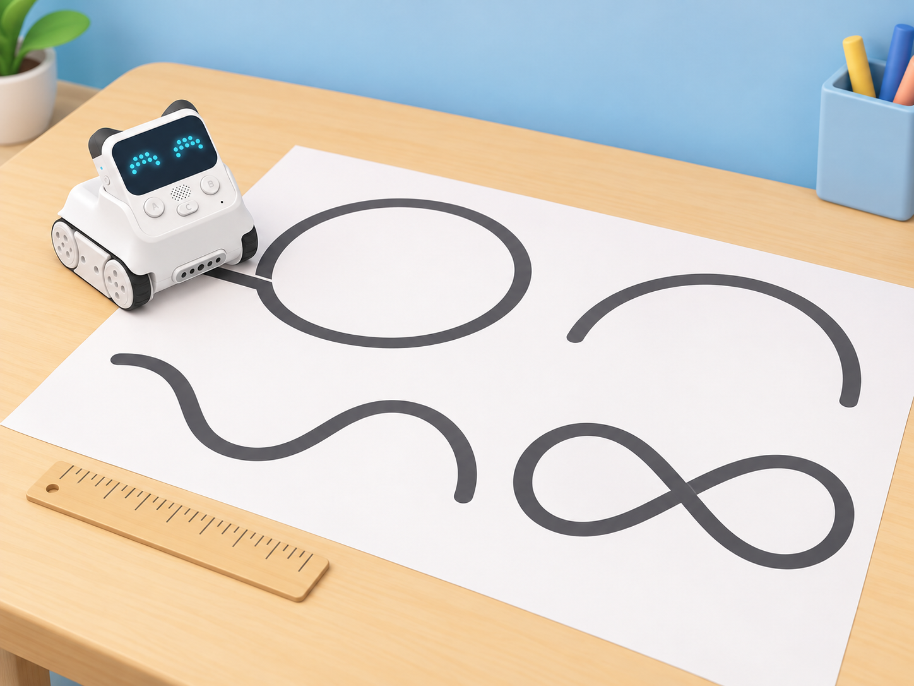
Fase 3 · Expliquem i registrem
Dissenyeu al mapa una ruta que combine una circumferència i una semicircumferència i intercanvieu-la amb una altra parella. Abans d’executar-la, anoteu els valors triats per a cada roda i la forma esperada; després, marqueu la traça real amb un llapis o amb una tira de paper. Registreu si el robot completa la corba, on s’obri o es tanca i quina diferència de potència ho pot explicar. Repetiu la prova sense canviar els valors per distingir una desviació puntual d’un resultat consistent.
Fase 4 · Apliquem i millorem
Dibuixeu una corba en S i acordeu un temps ample per completar-la com a prova de planificació, no com a competició entre persones. Dividiu-la en trams, indiqueu quan canvia el sentit de la corba i proveu el recorregut amb Codey Rocky en una zona delimitada. Canvieu una sola diferència de potència o la durada d’un tram, torneu a provar i compareu les traces. Com a ampliació del repte oficial, dissenyeu corbes consecutives o un huit;
intercanvieu el mapa amb una altra parella perquè puga predir-ne l’ordre abans de programar-lo.
Fase 5 · Comprovem i reflexionem
Gir i obstacles (40 min)
Fase 1 · Activem i prediem
Recupereu les traces corbes de L22 i presenteu un tram recte del camí escolar amb un obstacle tou al mig. Rocky ha de continuar el recorregut quan el camí és lliure i fer una desviació quan el sensor IR frontal detecta l’obstacle. Predigueu quines ordres ha d’executar en cada cas i dibuixeu una ruta lateral que el deixe avançar paral·lelament a l’obstacle. Aclariu que és una maqueta didàctica: no prova que el robot puga circular amb seguretat per un carrer real.
Fase 2 · Explorem i construïm
Comproveu que el mòdul de color del Rocky, que incorpora el sensor de proximitat IR, mira cap avant i que mBlock ofereix el bloc de detecció d’obstacles. En una pista plana, ampla i sense vores exposades, programeu l’inici amb A i una condició: si el sensor detecta l’obstacle, gireu a la dreta, avanceu un tram curt a potència reduïda, gireu a l’esquerra i torneu a llegir el sensor; si no en detecta cap, avanceu a baixa potència.
Afegiu un comptador de desviacions: després de tres intents seguits sense alliberar el pas, atureu els motors i mostreu un avís, en lloc de continuar provant indefinidament. Reinicieu el comptador quan el camí torne a estar lliure. Si «Els meus blocs» està disponible, agrupeu la maniobra en esquivar_obstacle(); altrament, conserveu-la com una seqüència de blocs visible. Si el sensor o el firmware no són compatibles, simuleu l’entrada amb targetes i etiqueteu la prova com a simulació.
quan es prem A fixa intents seguits a 0per sempre si obstacle detectat si intents seguits < 3 gira a la dreta avança un tram curt a potència baixa gira a l’esquerra per recuperar l’orientació suma 1 a intents seguits altrament atura els motors mostra avís de camí bloquejat altrament fixa intents seguits a 0 avança amb potència baixa durant 1 s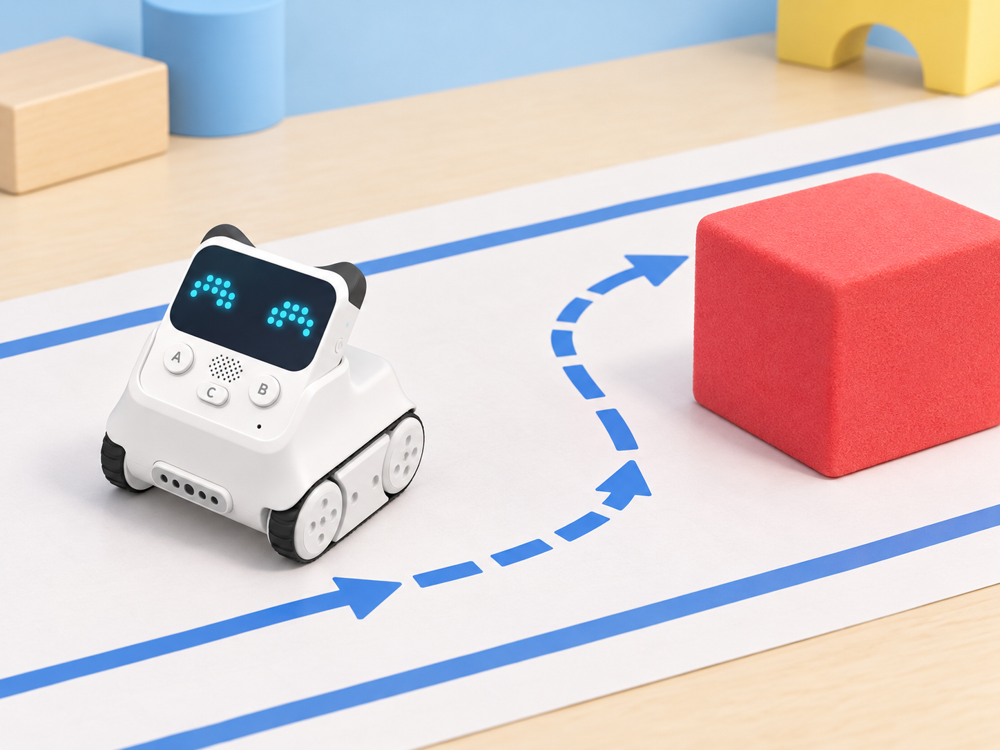
Fase 3 · Expliquem i registrem
Executeu primer el programa amb el camí lliure i després amb l’obstacle tou al davant, sempre des de la mateixa marca. Registreu l’estat esperat, la lectura o resposta del sensor, les ordres executades i si Rocky recupera el sentit inicial del recorregut. Repetiu cada cas una vegada sense canviar el programa. En una prova controlada, col·loqueu l’obstacle de manera que no es puga esquivar i comproveu que el tercer intent atura els motors i mostra l’avís;
retireu-lo i verifiqueu que el comptador es reinicia. Si la lectura apareix com una distància, anoteu-la com a valor aproximat del sensor; no la convertiu en una garantia sobre objectes, persones o distàncies reals.
Fase 4 · Apliquem i millorem
Canvieu el sentit de la desviació per provar l’extensió oficial d’esquivar cap a l’altre costat i compareu quina versió manté millor l’orientació de la ruta. Afegiu, quan siga adequat, una expressió a la matriu LED i un so breu i suau en detectar l’obstacle; manteniu sempre un senyal visual equivalent i deixeu el so desactivat si dificulta l’escolta o la concentració. Una persona observadora pot mostrar «lliure» o «obstacle» amb targetes perquè l’equip contraste la condició abans d’activar el robot.
Intercanvieu el diagrama amb una altra parella, que ha de predir el resultat dels dos casos. Modifiqueu una sola ordre cada vegada i manteniu sempre una persona responsable de la parada; no poseu els dits davant de les rodes ni del sensor.
Fase 5 · Comprovem i reflexionem
Segueix la línia (40 min)
Fase 1 · Activem i prediem
Dissenyeu una maqueta de ruta entre un centre d’interpretació de l’Albufera i un observatori d’aus: la cinta negra representa el camí i els espais clars, l’aigua o els camps. Localitzeu el sensor de color inferior de Rocky i el seu punt de llum RGB. Predigueu si la lectura de llum reflectida serà més alta sobre la línia o sobre el fons i expliqueu per què el valor pot canviar amb la superfície o la llum de l’aula.
És un model de taula, no una proposta per circular en l’entorn natural. La lectura és una unitat pròpia del sensor, no una mesura en lux.
Fase 2 · Explorem i construïm
Comproveu que el sensor inferior i el bloc de lectura de llum reflectida funcionen. Mostreu el valor en la matriu LED de Codey en temps real i prepareu targetes amb superfícies diferents. Mesureu primer la superfície clara i després la cinta negra; repetiu la lectura amb el punt RGB situat a la vora de la línia, tal com proposa el quadern. Feu tres lectures per superfície, anoteu-ne els valors i calculeu un llindar inicial entre els valors típics de fons i línia.
Registreu cada valor sense anomenar-lo lux ni suposar que serà igual en tots els robots.
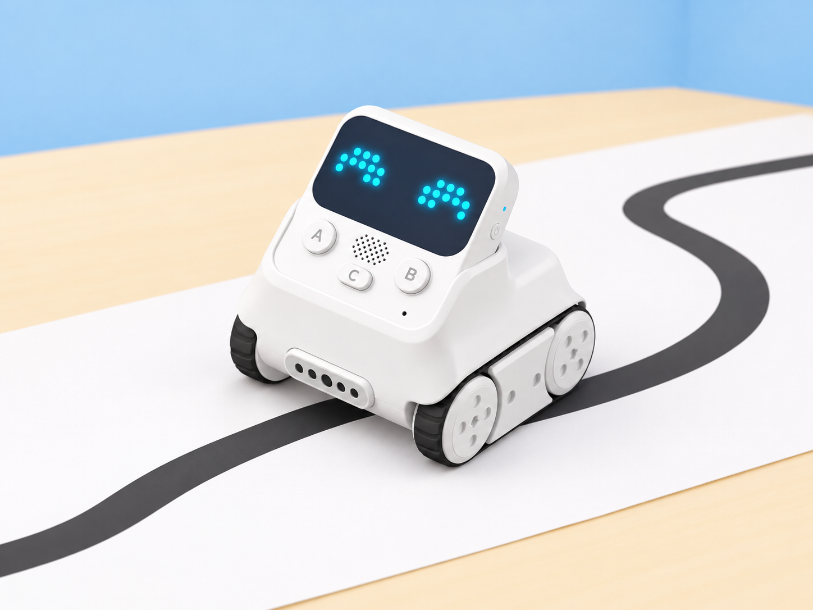
Fase 3 · Expliquem i registrem
Simuleu la regla amb una fitxa i fletxes: quan la lectura queda d’un costat del llindar, representeu una correcció de 45° cap a un costat; quan queda a l’altre, representeu la correcció oposada. És una versió de taula del joc de simulació del quadern, sense exigir moviments corporals. Després, programeu Rocky perquè avance a potència baixa i corregisca alternativament la direcció segons la lectura;
el llindar i el sentit de cada correcció s’han de comprovar amb les dades i l’orientació del sensor de la unitat disponible. Comenceu en un tram recte ample, afegiu una corba només quan la resposta siga repetible i deixeu una zona d’aturada lliure.
quan es prem A llig les superfícies clara i fosca estableix llindar entre les dues lectures per sempre mostra la lectura reflectida si lectura queda al costat de línia del llindar corregeix lleument cap a un costat altrament corregeix lleument cap a l’altre costat avança a potència baixa_Esbós de lògica, no una seqüència de blocs amb noms universals: calibreu el llindar, el sentit de gir i la potència amb el mBlock i el Rocky del centre._
Fase 4 · Apliquem i millorem
Proveu el recorregut de maqueta entre el centre d’interpretació i l’observatori, primer en recta i després amb una corba ampla. Registreu on Rocky perd o recupera la línia i quantes de tres proves arriba a la meta. Canvieu només el llindar entre negre i clar o la potència de moviment, repetiu les tres proves i compareu la traça.
Si el sensor o la versió no són compatibles, completeu la mateixa seqüència amb lectures simulades i marqueu clarament què s’ha mesurat i què s’ha representat.
Fase 5 · Comprovem i reflexionem
🧪 Evidències i avaluació
Al llarg de les 24 sessions, cada parella conserva un guió de disseny, pseudocodi, programa, taula de proves i canvi justificat. El museu final incorpora instruccions accessibles, una demostració i una nota que explica què mesura cada sensor i què no pot concloure. S’avaluen descomposició, seqüència, bucles, condicions, variables, funcions, depuració, prova i col·laboració.
♿ Participació, accessibilitat i seguretat
Limiteu les proves mòbils a una taula estable o pista tancada sense vores, cablatge ni obstacles durs. El sensor de so no registra ni identifica veus. Oferiu botons o teclat com a alternatives al giroscopi, codi en paper quan hi haja dificultats de connexió i funcions equivalents per a qui no manipule el robot.
🔗 Referents i adaptació
Aquesta seqüència adapta les 24 lliçons CSTA publicades per Makeblock: The Secret of Codey Rocky, Press Buttons to Change Emotions, To Be an Animation Designer, Identify the Bug, The Steamed Bread Can’t Jump, The Jumping Steamed Bread, The Racing Game I/II, Volume Bar, Good Morning! Functions, The Tiny Patroller I/II, The Squirrel’s Nuts Box, Mathematical Operations, The Bomb, Rock-Paper-Scissors, My Speedway, Game Control Schemes, Game Mechanics I/II, Fast and Furious, Make a Turn, Make a Turn Avoid Obstacles i Line-Following Car.
Cada repte s’ha reinterpretat amb materials i context propis. Les fitxes consultables directament s’enllacen a la pàgina oficial del curs CSTA: L1, L3, L4, L13, L14, L15, L17 i L18. Per a L2, el fabricant publica el manual docent de *Basic Coding Courses* i el quadern d’alumnat: s’hi contrasten esdeveniments, senyals geomètrics, blocs d’inici i de botó, pràctica per parelles i presentació. La seqüència local adapta aquests elements amb símbols propis, sense atribuir estats emocionals reals.
Per a L5–L6, el quadern confirma les animacions amb bucle comptat i infinit, la progressió entre repeticions finites i contínues, l’activació per esdeveniment, la creació d’històries, la presentació i l’autoavaluació; l’aturada de L6 usa la funció oficial `stop_all_scripts()` com a recurs de control local.
El quadern d’alumnat també permet contrastar els objectius de Make a Turn (repàs de conceptes bàsics de robòtica i disseny d’una ruta per a Codey Rocky) i Line-Following Car (aplicacions, intensitat reflectida i seguiment), però no equival als plans docents complets. La mateixa font conté una lliçó diferent, Avoid Obstacles, amb funcions, matemàtiques i obstacles; la usem com a referència complementària i no com a prova del pla CSTA Make a Turn Avoid Obstacles.
Els objectius del curs separat Codey Rocky & Neuron Discovery només s’usen com a comprovació complementària per a L1–L16; no es barregen els dos repertoris.
Makeblock publica a banda el curs Codey Rocky & Neuron Discovery, de 34 lliçons. Només s’hi podran adaptar unitats compatibles amb la dotació quan es confirme quins components Neuron hi ha disponibles; aquesta fitxa no els pressuposa.